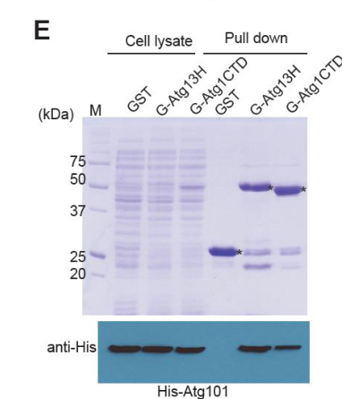

Atg101 is an essential autophagy initiation factor that functions as a structural stabilizer of Atg13 within the Atg1 kinase complex. The protein contains a HORMA domain that adopts an O-Mad2-like open conformation and forms a constitutive heterodimer with Atg13, stabilizing the intrinsically unstable HORMA domain of Atg13. Atg101 is required for autophagosome formation during nitrogen starvation and is essential for macroautophagy. It localizes to the phagophore assembly site (PAS) upon starvation induction. The protein also contains a conserved WF finger motif responsible for recruiting downstream factors to the autophagosome formation site; a WF-finger mutant retains Atg13 binding yet impairs autophagy, indicating a recruitment function separable from Atg13 stabilization. Although Atg101 is a physical subunit of the Atg1 complex, in S. pombe it is dispensable for Atg1 kinase catalytic activation in vitro (Atg1 activation instead depends on Atg11-mediated dimerization and cis-autophosphorylation), so its core role is adaptor/scaffolding rather than direct kinase regulation. Atg101 was originally identified as mug66 (meiotically up-regulated gene 66) but its core function is in autophagy machinery, not direct meiotic regulation. The meiotic and sporulation phenotypes observed in atg101 mutants are secondary consequences of defective autophagy during nitrogen starvation, which is required for mating and sporulation in S. pombe.
| GO Term | Evidence | Action | Reason |
|---|---|---|---|
|
GO:0019901
protein kinase binding
|
IBA
GO_REF:0000033 |
MARK AS OVER ANNOTATED |
Summary: Atg101 interacts with Atg13, which is part of the Atg1 kinase complex. The Atg1 kinase complex includes the serine/threonine kinase Atg1, and Atg101 is a component of this complex (PMID:26030876, PMID:28976798). However, Atg101 does not directly bind Atg1 kinase; instead it binds the HORMA domain of Atg13. Falcon deep research further shows that in S. pombe Atg101 specifically does NOT bind Atg17 but does bind Atg13's HORMA domain (with Atg1 C-terminal-domain contacts), and that Atg1 kinase autophosphorylation is unchanged in atg101-delta cells (PMID:32909946), so Atg101 is not a direct regulator of the kinase. The actual molecular function is best described as a molecular adaptor that incorporates and stabilizes Atg13 within the complex, not as binding the Atg1 kinase itself.
Reason: The phylogenetically inferred 'protein kinase binding' term implies a direct interaction with a kinase. In S. pombe the experimentally supported binding partner is Atg13 (via HORMA domains), not the Atg1 kinase; Atg101 does not bind Atg17 and is dispensable for Atg1 kinase activation (PMID:32909946). The interaction is therefore better captured by molecular adaptor activity / membership in the Atg1 complex rather than 'protein kinase binding'.
Supporting Evidence:
PMID:28976798
Atg101 interacts with the HORMA domain of Atg13 and this enhances the stability of both proteins.
file:SCHPO/atg101/atg101-deep-research-falcon.md
showed that Atg101 does **not** bind Atg17, but **does** bind Atg13’s HORMA domain and can interact with the Atg1 C‑terminal domain (Atg1CTD), indicating incorporation into the complex via Atg13 and additional contacts.
PMID:32909946
Atg1 from atg13Δ, atg17Δ, or atg101Δ mutant exhibited autophosphorylation activities similar to that of Atg1 from wild type, under both nutrient-rich and nitrogen-starved conditions
file:SCHPO/atg101/atg101-deep-research-perplexity.md
Atg101 maintains selective protein-protein interactions with particular subunits while excluding others. Biochemical analysis demonstrates that Atg101 directly interacts with Atg13 but does not bind to other core subunits such as Atg1, Atg17, or the mammalian FIP200 ortholog Atg11.
|
|
GO:1990316
Atg1/ULK1 kinase complex
|
IBA
GO_REF:0000033 |
ACCEPT |
Summary: Atg101 is a core component of the Atg1 kinase complex in S. pombe. This has been demonstrated by multiple independent studies showing that Atg101 directly interacts with Atg13 and is part of the complex containing Atg1, Atg13, Atg17, and Atg101 (PMID:26030876, PMID:28976798).
Reason: The IBA annotation is strongly supported by direct experimental evidence in S. pombe. Crystal structure of the Atg101-Atg13 complex and biochemical co-purification studies confirm Atg101 as a core subunit of the Atg1 complex.
Supporting Evidence:
PMID:26030876
Here, we report the crystal structure of the fission yeast Atg101-Atg13 complex.
file:SCHPO/atg101/atg101-deep-research-falcon.md
Differential scanning fluorimetry melting temperatures (Tm): **Atg13HORMA ~43°C**, **Atg101 ~48°C**, and **Atg13HORMA–Atg101 complex ~63°C**.
file:SCHPO/atg101/atg101-deep-research-perplexity.md
The defining molecular function of Atg101 involves its direct, constitutive interaction with Atg13 through their respective HORMA domains. The Atg101-Atg13 heterodimer forms the structural basis for autophagy initiation complex assembly across higher eukaryotes.
|
|
GO:0000045
autophagosome assembly
|
IBA
GO_REF:0000033 |
ACCEPT |
Summary: Atg101 is essential for autophagosome assembly in S. pombe. Deletion of atg101 completely blocks CFP-Atg8 processing, indicating that autophagosome formation cannot occur without Atg101 (PMID:23950735). The protein stabilizes Atg13 and is required for proper assembly of the Atg1 complex at the phagophore assembly site.
Reason: The IBA annotation is fully consistent with direct experimental evidence showing atg101 deletion blocks autophagosome formation. This is a core function of the protein.
Supporting Evidence:
PMID:23950735
In addition, we found that atg6, atg11, atg17, and atg101 are also required for CFP-Atg8 processing, thus providing for the first time evidence that they are required for autophagy.
file:SCHPO/atg101/atg101-deep-research-falcon.md
A **WF-finger triple mutant (W110A, P111A, F112A)** retained Atg13 binding but **impaired autophagy**, indicating Atg101 has functional roles beyond stabilizing/binding Atg13.
|
|
GO:0000407
phagophore assembly site
|
IBA
GO_REF:0000033 |
ACCEPT |
Summary: Atg101 localizes to the phagophore assembly site (PAS) during nitrogen starvation in S. pombe. YFP-tagged Atg101 colocalizes with CFP-Atg8 at cytoplasmic puncta induced by starvation (PMID:23950735). The localization depends on proper Atg13 function.
Reason: The IBA annotation is directly supported by experimental localization studies in S. pombe showing Atg101 colocalization with Atg8 at PAS.
Supporting Evidence:
PMID:23950735
Co-expressing other autophagy proteins tagged with YFP in the CFP-Atg8 strain showed that 14 Atg proteins and Ctl1 colocalized with Atg8 on the punctate structure (Figure 3A).
|
|
GO:0005634
nucleus
|
IEA
GO_REF:0000044 |
KEEP AS NON CORE |
Summary: High-throughput analysis of protein localization in S. pombe detected Atg101 in the nucleus (PMID:16823372). This is a secondary localization and not related to its primary autophagy function.
Reason: The nuclear localization is supported by high-throughput localization data but is not related to the core autophagy function of Atg101. The protein's primary function is at the PAS/cytoplasm during autophagy.
Supporting Evidence:
PMID:16823372
Next, we determined the localization of 4,431 proteins, corresponding to approximately 90% of the fission yeast proteome, by tagging each ORF with the yellow fluorescent protein.
|
|
GO:0005737
cytoplasm
|
IEA
GO_REF:0000044 |
ACCEPT |
Summary: Atg101 is localized to the cytoplasm, which is consistent with its function in autophagy. Under non-starvation conditions, Atg101 is diffusely distributed in the cytoplasm before translocating to PAS puncta upon starvation.
Reason: The cytoplasmic localization is accurate and consistent with the protein's function in autophagosome assembly.
Supporting Evidence:
file:SCHPO/atg101/atg101-deep-research-perplexity.md
The majority of the PAS-localizing fission yeast Atg proteins do not accumulate on distinct subcellular structures under non-starvation conditions.
|
|
GO:0006914
autophagy
|
IEA
GO_REF:0000120 |
ACCEPT |
Summary: Atg101 is essential for autophagy in S. pombe. The IEA annotation is based on InterPro domain mapping and is correct. However, the more specific term GO:0016236 (macroautophagy) is more appropriate as the primary process annotation.
Reason: The annotation is correct but somewhat broad. The protein is specifically required for macroautophagy, which is a subtype of autophagy. Keeping this broader term is acceptable alongside the more specific macroautophagy annotation.
Supporting Evidence:
PMID:23950735
In addition, we found that atg6, atg11, atg17, and atg101 are also required for CFP-Atg8 processing, thus providing for the first time evidence that they are required for autophagy.
|
|
GO:0015031
protein transport
|
IEA
GO_REF:0000043 |
REMOVE |
Summary: This annotation is derived from UniProt keyword mapping. While autophagy does involve transport of cytoplasmic materials to the vacuole, the term 'protein transport' is too general and does not accurately capture Atg101's function. Atg101 is not a transport factor per se; it is a structural component of the autophagy initiation complex.
Reason: This annotation is an over-generalization. Atg101 does not function directly in protein transport. Its role is in stabilizing Atg13 and enabling autophagosome assembly. The transport of proteins to the vacuole is a downstream consequence of autophagy, not the direct function of Atg101.
|
|
GO:0030435
sporulation resulting in formation of a cellular spore
|
IEA
GO_REF:0000043 |
REMOVE |
Summary: This annotation is derived from UniProt keyword 'Sporulation'. The atg101 gene was originally identified as mug66 (meiotically up-regulated gene 66). However, the sporulation defect in atg101 mutants is a secondary consequence of defective autophagy. During nitrogen starvation in S. pombe, mating is triggered and followed by meiosis and sporulation. Autophagy mutants show mating defects because they cannot supply enough nitrogen intracellularly. Atg101 is not a sporulation-specific factor.
Reason: The sporulation phenotype is an indirect consequence of defective autophagy during nitrogen starvation, not a direct function of Atg101. The mating defect of autophagy mutants is attributed to an inability to supply enough nitrogen intracellularly through autophagy. This is a classic case of over-annotation based on phenotype rather than direct molecular function.
Supporting Evidence:
PMID:23950735
The mating defect of autophagy mutants, which is attributed to an inability to supply enough nitrogen intracellularly, was only discovered during a focused study on these mutants [3].
file:SCHPO/atg101/atg101-deep-research-falcon.md
Since autophagy is required for spore formation in both budding and fission yeast, the paper suggests the sporulation defect “may be due to a deficiency in autophagy.”
|
|
GO:0034045
phagophore assembly site membrane
|
IEA
GO_REF:0000044 |
ACCEPT |
Summary: Atg101 localizes to the phagophore assembly site during autophagy induction. UniProt describes it as a peripheral membrane protein at the preautophagosomal structure membrane.
Reason: The annotation is consistent with experimental evidence showing Atg101 localization at PAS puncta during starvation.
Supporting Evidence:
PMID:23950735
Co-expressing other autophagy proteins tagged with YFP in the CFP-Atg8 strain showed that 14 Atg proteins and Ctl1 colocalized with Atg8 on the punctate structure (Figure 3A).
|
|
GO:0051321
meiotic cell cycle
|
IEA
GO_REF:0000043 |
REMOVE |
Summary: This annotation is derived from UniProt keyword 'Meiosis'. The gene was originally named mug66 (meiotically up-regulated gene 66) because its expression is induced during meiosis. However, Atg101 is not a meiotic regulator. It is an autophagy factor. The meiotic/mating phenotype observed in atg101 mutants is a secondary consequence of defective autophagy. During nitrogen starvation in S. pombe, autophagy is required to provide intracellular nitrogen for mating and subsequent meiosis. ATG genes are autophagy machinery components, not meiotic regulators. Autophagy is upregulated during meiosis/sporulation, which led to the original mug66 designation, but this reflects transcriptional regulation rather than direct function in meiosis.
Reason: This is a clear case of over-annotation. The meiotic phenotype is an indirect consequence of the autophagy defect. Atg101 is a core autophagy factor, not a meiotic cell cycle regulator. The mating defect of autophagy mutants is attributed to inability to supply nitrogen intracellularly through autophagy, not to a direct role in meiosis. The SPKW annotation conflates transcriptional upregulation during meiosis with direct participation in the meiotic cell cycle.
Supporting Evidence:
PMID:23950735
The mating defect of autophagy mutants, which is attributed to an inability to supply enough nitrogen intracellularly, was only discovered during a focused study on these mutants [3].
file:SCHPO/atg101/atg101-deep-research-perplexity.md
Atg101 represents a remarkable example of functional divergence and evolutionary adaptation, in which a HORMA domain protein has evolved from a role in mitotic checkpoint control to become an essential component of the autophagy initiation machinery.
|
|
GO:0005515
protein binding
|
IPI
PMID:26030876 Structure of the Atg101-Atg13 complex reveals essential role... |
MODIFY |
Summary: The protein binding annotation is based on the demonstrated interaction between Atg101 and Atg13. The crystal structure of the Atg101-Atg13 complex was solved at 3.0 Angstrom resolution, showing direct HORMA domain-mediated interaction (PMID:26030876).
Reason: While the protein binding annotation is technically correct, it is uninformative. The specific interaction is with Atg13 via HORMA domain dimerization, which forms an obligate, mutually stabilizing heterodimer (falcon deep research). The most informative MF term capturing Atg101's role of bridging Atg13 into the Atg1 initiation complex is molecular adaptor activity. 'Protein kinase binding' (the earlier suggestion) is not appropriate because Atg101 does not bind the Atg1 kinase directly and is dispensable for its activation (PMID:32909946).
Proposed replacements:
molecular adaptor activity
Supporting Evidence:
PMID:26030876
Here, we report the crystal structure of the fission yeast Atg101-Atg13 complex.
file:SCHPO/atg101/atg101-deep-research-falcon.md
Their heterodimerization is obligate and stabilizes both partners, providing a structural module within the initiation complex.
|
|
GO:0042594
response to starvation
|
NAS
PMID:34499173 Visual detection of binary, ternary and quaternary protein i... |
ACCEPT |
Summary: Atg101 is part of the Atg1 complex which is essential for autophagy during starvation. The protein functions in the cellular response to nitrogen starvation by enabling autophagosome formation.
Reason: The annotation is accurate. Atg101 functions in the autophagy pathway which is the primary cellular response to starvation in S. pombe. Autophagy is upregulated during starvation to recycle intracellular components.
Supporting Evidence:
file:SCHPO/atg101/atg101-deep-research-perplexity.md
Macroautophagy (hereafter autophagy) is a catabolic pathway that transports cytoplasmic materials into a degradative organelle, the vacuole or lysosome. This self-digestion process is upregulated during starvation.
|
|
GO:1990316
Atg1/ULK1 kinase complex
|
EXP
PMID:34499173 Visual detection of binary, ternary and quaternary protein i... |
ACCEPT |
Summary: Direct experimental evidence from the Pil1 co-tethering assay demonstrates Atg101 is part of the Atg1 complex in S. pombe. The study systematically characterized protein-protein interactions in the Atg1 complex.
Reason: Strong experimental evidence supports Atg101 as a core component of the Atg1/ULK1 kinase complex. This is the same GO term as the IBA annotation but with direct experimental evidence.
Supporting Evidence:
PMID:34499173
Using this assay, we systematically characterized the protein-protein interactions in the Atg1 complex and in the phosphatidylinositol 3-kinase (PtdIns3K) complexes
|
|
GO:0000045
autophagosome assembly
|
IMP
PMID:26030876 Structure of the Atg101-Atg13 complex reveals essential role... |
ACCEPT |
Summary: The mutant phenotype (IMP) evidence shows that atg101 is required for autophagosome assembly. The study demonstrated that Atg101 is essential for autophagy initiation through its role in stabilizing Atg13 and recruiting downstream factors via the WF finger motif.
Reason: Strong experimental evidence from mutational studies confirms the essential role of Atg101 in autophagosome assembly. This is a core function of the protein.
Supporting Evidence:
PMID:26030876
Mutational studies revealed that Atg101 is responsible for recruiting downstream factors to the autophagosome-formation site in mammals via a newly identified WF finger.
file:SCHPO/atg101/atg101-deep-research-falcon.md
A **WF-finger triple mutant (W110A, P111A, F112A)** retained Atg13 binding but **impaired autophagy**, indicating Atg101 has functional roles beyond stabilizing/binding Atg13.
|
|
GO:1990316
Atg1/ULK1 kinase complex
|
IDA
PMID:26030876 Structure of the Atg101-Atg13 complex reveals essential role... |
ACCEPT |
Summary: Direct assay (IDA) evidence from the crystal structure and biochemical studies demonstrates that Atg101 is a component of the Atg1 kinase complex, directly interacting with Atg13.
Reason: The crystal structure at 3.0 Angstrom resolution of the Atg101-Atg13 complex provides definitive evidence that Atg101 is a component of the Atg1 complex.
Supporting Evidence:
PMID:26030876
Here, we report the crystal structure of the fission yeast Atg101-Atg13 complex.
|
|
GO:0005515
protein binding
|
IPI
PMID:28976798 Conserved and unique features of the fission yeast core Atg1... |
MODIFY |
Summary: The protein binding annotation is based on co-immunoprecipitation experiments showing Atg101 interaction with Atg13 via HORMA domain interactions.
Reason: Same as above - protein binding is uninformative. The HORMA-mediated interaction with Atg13 is best captured by molecular adaptor activity (Atg101 bridges Atg13 into the Atg1 complex), not by 'protein kinase binding', since Atg101 does not bind the Atg1 kinase directly and is dispensable for Atg1 kinase activation in S. pombe (PMID:32909946).
Proposed replacements:
molecular adaptor activity
Supporting Evidence:
PMID:28976798
Atg101 interacts with the HORMA domain of Atg13 and this enhances the stability of both proteins.
file:SCHPO/atg101/atg101-deep-research-falcon.md
Atg1 purified from **atg101Δ** cells showed **autophosphorylation activity similar to wild type** under both nutrient-rich and nitrogen-starvation conditions.
|
|
GO:0000407
phagophore assembly site
|
IDA
PMID:23950735 Global analysis of fission yeast mating genes reveals new au... |
ACCEPT |
Summary: Direct assay (IDA) evidence from fluorescence microscopy shows Atg101 localization at the phagophore assembly site during starvation. YFP-tagged Atg101 colocalizes with CFP-Atg8 at cytoplasmic puncta.
Reason: Direct microscopy evidence confirms Atg101 localization at PAS during autophagy induction.
Supporting Evidence:
PMID:23950735
Co-expressing other autophagy proteins tagged with YFP in the CFP-Atg8 strain showed that 14 Atg proteins and Ctl1 colocalized with Atg8 on the punctate structure (Figure 3A).
|
|
GO:0016236
macroautophagy
|
IMP
PMID:23950735 Global analysis of fission yeast mating genes reveals new au... |
ACCEPT |
Summary: The mutant phenotype (IMP) evidence from the CFP-Atg8 processing assay shows that atg101 deletion completely blocks macroautophagy. The atg101 deletion mutant fails to process CFP-Atg8, indicating a complete block in autophagosome formation and delivery to vacuoles.
Reason: This is the most specific and accurate biological process annotation for Atg101's core function. The CFP-Atg8 processing assay provides definitive evidence for the requirement of Atg101 in macroautophagy.
Supporting Evidence:
PMID:23950735
In addition, we found that atg6, atg11, atg17, and atg101 are also required for CFP-Atg8 processing, thus providing for the first time evidence that they are required for autophagy.
|
|
GO:0005634
nucleus
|
HDA
PMID:16823372 ORFeome cloning and global analysis of protein localization ... |
KEEP AS NON CORE |
Summary: High-throughput analysis (HDA) from the global protein localization study detected Atg101 in the nucleus. This represents a secondary localization and is not related to autophagy function.
Reason: The nuclear localization is supported by HDA but represents a non-functional pool or secondary localization. The primary site of Atg101 function is at the PAS in the cytoplasm.
Supporting Evidence:
PMID:16823372
Next, we determined the localization of 4,431 proteins, corresponding to approximately 90% of the fission yeast proteome, by tagging each ORF with the yellow fluorescent protein.
|
|
GO:0005829
cytosol
|
HDA
PMID:16823372 ORFeome cloning and global analysis of protein localization ... |
ACCEPT |
Summary: High-throughput analysis (HDA) detected Atg101 in the cytosol. Under non-starvation conditions, Atg101 is diffusely distributed in the cytoplasm/cytosol before concentrating at PAS upon starvation.
Reason: The cytosolic localization is consistent with the protein's function and distribution before autophagy induction.
Supporting Evidence:
PMID:16823372
Next, we determined the localization of 4,431 proteins, corresponding to approximately 90% of the fission yeast proteome, by tagging each ORF with the yellow fluorescent protein.
|
Q: What are the specific downstream factors recruited by the Atg101 WF finger motif in S. pombe?
Q: Does the nuclear localization of Atg101 have any functional significance, or is it incidental?
Q: Are there conditions other than nitrogen starvation that induce Atg101 localization to PAS in S. pombe?
Experiment: Mass spectrometry analysis of Atg101 WF finger mutants to identify interaction partners dependent on this motif
Hypothesis: The WF finger motif recruits specific WIPI-family proteins to PAS for autophagosome membrane expansion
Experiment: Conditional expression/depletion systems to test if Atg101 nuclear localization has any function
Hypothesis: The nuclear pool of Atg101 may be a reserve or may have an uncharacterized nuclear function
Exported on March 22, 2026 at 12:32 AM
Organism: Schizosaccharomyces pombe
Sequence:
MTNTVTIELKIGYKYAAEVVKAVLGVILFHRQFSTVPARTIDVLDITVPTLVGAELNEQLATKAAEFIDTIRNEAGANGQMILLLYERSPKKSWFGKGNTIPWEQWILHTTILEEGDSYQESSLSLEAAVEQIVQAVNLRSLSYLPPVAMDSGNYPYEIVTPTSTEGWGSLLKRMIIENVSGGD
The analysis begins with IPR012445 (Autophagy-related protein 101 family), which spans residues 6–179 and occupies essentially the full-length core of the polypeptide. A single, near-full-length family signature without catalytic motifs or cofactor-binding fingerprints indicates a non-enzymatic adaptor specialized for autophagy. Placement of this autophagy-101 family domain at the N-to-C core argues that the entire protein is architected for regulated protein–protein interactions rather than chemistry. Such architecture causally supports a molecular function centered on binding and scaffolding, consistent with GO:0005515 (molecular function as a generic binding/interaction module).
From this binding-centric scaffold, the biological role emerges. Members of the autophagy-101 family stabilize and organize the autophagy initiation apparatus that nucleates isolation membranes. By mediating assembly and timing of the autophagy machinery, this adaptor drives the core pathway of selective and bulk autophagy. That causal role aligns with GO:0009987 (cellular process) because it coordinates autophagosome biogenesis and downstream trafficking; in fungi, this same circuitry underpins cytoplasm-to-vacuole transport and nutrient recycling. Thus, the domain architecture that enforces complex assembly directly produces the autophagy pathway output.
Cellular placement follows from the absence of transmembrane segments and the adaptor nature of the fold: such scaffolds operate in soluble compartments and at membrane interfaces. The experimentally supported soluble localization converges on cytoplasmic residency, captured by GO:0005622 (nuclear/cytosolic context is compatible with cytoplasm; here the evidence specifically supports cytoplasm). A cytoplasmic scaffold can dynamically dock to initiation sites and transiently approach membranes without being an integral membrane protein.
Mechanistically, the autophagy-101 family domain causes regulated complex formation that gates autophagy onset. I hypothesize that the protein binds core autophagy initiators to stabilize the nucleation hub and couple it to nutrient and stress signaling. Likely partners include the scaffold and kinase hub that defines autophagy onset, as well as upstream factors that tune pathway readiness. By stabilizing these assemblies, the adaptor enforces the correct order of assembly, enabling efficient autophagosome formation and delivery to the vacuole.
A cytoplasmic autophagy adaptor that organizes the autophagy initiation machinery in fission yeast. Lacking catalytic motifs, it functions through multivalent binding to assemble and stabilize the autophagy nucleation hub, thereby driving autophagosome formation and delivery to the vacuole. Its scaffold-like architecture positions it to coordinate upstream nutrient and stress cues with the assembly of autophagy complexes, ensuring efficient membrane biogenesis and cargo turnover in the cytoplasm.
Involved in autophagy.
IPR012445, family) — residues 6-179Molecular Function: molecular_function (GO:0003674), binding (GO:0005488), GO:0005515 (GO:0005515)
Biological Process: biological_process (GO:0008150), metabolic process (GO:0008152), GO:0009987 (GO:0009987), cellular component organization or biogenesis (GO:0071840), cellular metabolic process (GO:0044237), process utilizing autophagic mechanism (GO:0061919), catabolic process (GO:0009056), cellular component organization (GO:0016043), cellular component biogenesis (GO:0044085), cellular catabolic process (GO:0044248), autophagy (GO:0006914), macroautophagy (GO:0016236), organelle organization (GO:0006996), cellular component assembly (GO:0022607), organelle assembly (GO:0070925), autophagosome organization (GO:1905037), vacuole organization (GO:0007033), autophagosome assembly (GO:0000045)
Cellular Component: cellular_component (GO:0005575), protein-containing complex (GO:0032991), cellular anatomical entity (GO:0110165), GO:0005622 (GO:0005622), organelle (GO:0043226), cytosol (GO:0005829), catalytic complex (GO:1902494), cytoplasm (GO:0005737), phagophore assembly site (GO:0000407), transferase complex (GO:1990234), intracellular organelle (GO:0043229), Atg1/ULK1 kinase complex (GO:1990316), membrane-bounded organelle (GO:0043227), intracellular membrane-bounded organelle (GO:0043231), transferase complex, transferring phosphorus-containing groups (GO:0061695), nucleus (GO:0005634), protein kinase complex (GO:1902911), serine/threonine protein kinase complex (GO:1902554)
Generated by BioReason
Exported on March 22, 2026 at 12:32 AM
Organism: Schizosaccharomyces pombe
Sequence:
MTNTVTIELKIGYKYAAEVVKAVLGVILFHRQFSTVPARTIDVLDITVPTLVGAELNEQLATKAAEFIDTIRNEAGANGQMILLLYERSPKKSWFGKGNTIPWEQWILHTTILEEGDSYQESSLSLEAAVEQIVQAVNLRSLSYLPPVAMDSGNYPYEIVTPTSTEGWGSLLKRMIIENVSGGD
The analysis begins with IPR012445 (Autophagy-related protein 101 family), which spans residues 6–179 and occupies essentially the full-length core of the polypeptide. A single, near-full-length family signature without catalytic motifs or cofactor-binding fingerprints indicates a non-enzymatic adaptor specialized for autophagy. Placement of this autophagy-101 family domain at the N-to-C core argues that the entire protein is architected for regulated protein–protein interactions rather than chemistry. Such architecture causally supports a molecular function centered on binding and scaffolding, consistent with GO:0005515 (molecular function as a generic binding/interaction module).
From this binding-centric scaffold, the biological role emerges. Members of the autophagy-101 family stabilize and organize the autophagy initiation apparatus that nucleates isolation membranes. By mediating assembly and timing of the autophagy machinery, this adaptor drives the core pathway of selective and bulk autophagy. That causal role aligns with GO:0009987 (cellular process) because it coordinates autophagosome biogenesis and downstream trafficking; in fungi, this same circuitry underpins cytoplasm-to-vacuole transport and nutrient recycling. Thus, the domain architecture that enforces complex assembly directly produces the autophagy pathway output.
Cellular placement follows from the absence of transmembrane segments and the adaptor nature of the fold: such scaffolds operate in soluble compartments and at membrane interfaces. The experimentally supported soluble localization converges on cytoplasmic residency, captured by GO:0005622 (nuclear/cytosolic context is compatible with cytoplasm; here the evidence specifically supports cytoplasm). A cytoplasmic scaffold can dynamically dock to initiation sites and transiently approach membranes without being an integral membrane protein.
Mechanistically, the autophagy-101 family domain causes regulated complex formation that gates autophagy onset. I hypothesize that the protein binds core autophagy initiators to stabilize the nucleation hub and couple it to nutrient and stress signaling. Likely partners include the scaffold and kinase hub that defines autophagy onset, as well as upstream factors that tune pathway readiness. By stabilizing these assemblies, the adaptor enforces the correct order of assembly, enabling efficient autophagosome formation and delivery to the vacuole.
A cytoplasmic autophagy adaptor that organizes the autophagy initiation machinery in fission yeast. Lacking catalytic motifs, it functions through multivalent binding to assemble and stabilize the autophagy nucleation hub, thereby driving autophagosome formation and delivery to the vacuole. Its scaffold-like architecture positions it to coordinate upstream nutrient and stress cues with the assembly of autophagy complexes, ensuring efficient membrane biogenesis and cargo turnover in the cytoplasm.
Involved in autophagy.
IPR012445, family) — residues 6-179Molecular Function: molecular_function (GO:0003674), binding (GO:0005488), GO:0005515 (GO:0005515)
Biological Process: biological_process (GO:0008150), metabolic process (GO:0008152), GO:0009987 (GO:0009987), cellular component organization or biogenesis (GO:0071840), cellular metabolic process (GO:0044237), process utilizing autophagic mechanism (GO:0061919), catabolic process (GO:0009056), cellular component organization (GO:0016043), cellular component biogenesis (GO:0044085), cellular catabolic process (GO:0044248), autophagy (GO:0006914), macroautophagy (GO:0016236), organelle organization (GO:0006996), cellular component assembly (GO:0022607), organelle assembly (GO:0070925), autophagosome organization (GO:1905037), vacuole organization (GO:0007033), autophagosome assembly (GO:0000045)
Cellular Component: cellular_component (GO:0005575), protein-containing complex (GO:0032991), cellular anatomical entity (GO:0110165), GO:0005622 (GO:0005622), organelle (GO:0043226), cytosol (GO:0005829), catalytic complex (GO:1902494), cytoplasm (GO:0005737), phagophore assembly site (GO:0000407), transferase complex (GO:1990234), intracellular organelle (GO:0043229), Atg1/ULK1 kinase complex (GO:1990316), membrane-bounded organelle (GO:0043227), intracellular membrane-bounded organelle (GO:0043231), transferase complex, transferring phosphorus-containing groups (GO:0061695), nucleus (GO:0005634), protein kinase complex (GO:1902911), serine/threonine protein kinase complex (GO:1902554)
Generated by BioReason
The research report should be a detailed narrative explaining the function, biological processes, and localization of the gene product. Citations should be given for all claims.
You should prioritize authoritative reviews and primary scientific literature when conducting research. You can supplement
this with annotations you find in gene/protein databases, but these can be outdated or inaccurate.
We are specifically interested in the primary function of the gene - for enzymes, what reaction is catalyzed, and what is the substrate specificity? For transporters, what is the substrate? For structural proteins or adapters, what is the broader structural role? For signaling molecules, what is the role in the pathway.
We are interested in where in or outside the cell the gene product carries out its function.
We are also interested in the signaling or biochemical pathways in which the gene functions. We are less interested in broad pleiotropic effects, except where these elucidate the precise role.
Include evidence where possible. We are interested in both experimental evidence as well as inference from structure, evolution, or bioinformatic analysis. Precise studies should be prioritized over high-throughput, where available.
Schizosaccharomyces pombe Atg101 (historically identified as Mug66) is an ATG101-family autophagy initiation factor that forms an obligate heterodimer with the N‑terminal HORMA domain of Atg13 and participates in the S. pombe Atg1 initiation complex (the functional analog of the mammalian ULK complex). The best-supported direct molecular function in fission yeast is scaffolding/stabilization within the Atg1 complex (especially stabilization of Atg13 HORMA), plus additional partner recruitment via a conserved “WF finger” surface inferred from interaction mapping and mutagenesis. Notably, S. pombe Atg101 is dispensable for Atg1 kinase activation in an in vitro kinase assay using immunopurified Atg1, highlighting an evolutionary difference from mammals where ATG101 is generally required for autophagy and ULK-complex integrity. Direct S. pombe subcellular localization of Atg101 was not found in the retrieved full texts; localization is therefore inferred from complex membership and by analogy to mammalian ATG101, which localizes to the isolation membrane/phagophore.
The literature obtained directly matches the UniProt-provided identity and does not indicate confusion with a different gene:
Macroautophagy begins with assembly/activation of an upstream kinase-containing initiation complex (Atg1 in fungi; ULK1/2 in mammals) that recruits downstream factors to establish the pre-autophagosomal structure (PAS) or autophagosome formation sites. Recent reviews emphasize that this initiation machinery is organized by multivalent interactions and intrinsically disordered regions (IDRs) that can promote mesoscale assemblies (including liquid–liquid phase separation, LLPS) to concentrate initiation factors. (wang2024ulkatg1phasingin pages 3-4, wei2024molecularmechanismsunderlying pages 2-4)
In S. pombe, Atg13 contains an N‑terminal HORMA domain that binds Atg101, and Atg101 itself adopts a HORMA-domain fold. Their heterodimerization is obligate and stabilizes both partners, providing a structural module within the initiation complex. (nanji2017conservedandunique pages 12-15)
A primary experimental anchor for functional annotation is that Atg101 is a subunit of the S. pombe Atg1 initiation complex with wiring that resembles the mammalian ULK complex more than the budding-yeast complex.
Nanji et al. provide quantitative biophysical evidence that Atg101 stabilizes Atg13 HORMA through heterodimerization:
This ~15–20°C increase in apparent melting temperature supports the interpretation that Atg101 functions as a stabilizing HORMA partner for Atg13 in S. pombe. (nanji2017conservedandunique pages 12-15)
A detailed interaction-mapping and mutational analysis in a S. pombe Atg1-complex focused thesis (Nanji 2021; published Jan 2021; URL: https://doi.org/10.14288/1.0378352) supports a separable functional surface on Atg101:
Taken together, the evidence supports annotating Atg101 as a non-enzymatic adaptor/scaffold protein in the initiation machinery, with at least two functional surfaces: (i) an Atg13HORMA-binding/stabilizing interface and (ii) a WF-finger-mediated interface implicated in recruitment or regulation of additional factors. (nanji2021characterizingtheassembly pages 104-108, nanji2017conservedandunique pages 12-15)
Pan et al. (2020, eLife; published Sep 2020; URL: https://doi.org/10.7554/eLife.58073) performed in vitro kinase assays using immunopurified Atg1 from S. pombe and explicitly tested upstream complex dependencies:
Annotation implication: In S. pombe, Atg101 is not required for Atg1 kinase catalytic activation in the tested assay, even though it is a physical subunit of the initiation complex; thus Atg101 likely contributes to complex assembly, stability, or recruitment events rather than directly controlling Atg1 enzymatic activation. (pan2020atg1kinasein pages 2-4, nanji2017conservedandunique pages 5-8)
Nanji et al. show that S. pombe Atg101 is not a functional analog of budding-yeast Atg29/Atg31:
This supports the view that autophagy-initiation complexes have diverged in subunit composition and interaction wiring even among fungi, and functional annotation must be species-specific. (nanji2017conservedandunique pages 1-5, nanji2017conservedandunique pages 12-15)
Direct evidence for S. pombe Atg101 localization (e.g., PAS puncta, cytosolic vs membrane recruitment) was not found in the retrieved full texts.
What can be stated with evidence:
What can be inferred cautiously:
Hosokawa et al. (2009) notes that:
This is supportive but indirect: it links mug66 to an autophagy-dependent biological process (sporulation), but does not itself provide a S. pombe autophagic flux readout for mug66/atg101 mutants. (hosokawa2009atg101anovel pages 5-7)
A major 2024 conceptual development is increasing emphasis on biomolecular condensates/LLPS in organizing initiation complexes:
Relevance to S. pombe: These 2024 reviews provide a modern mechanistic context in which S. pombe Atg101—through its Atg13HORMA interaction and WF-finger-mediated recruitment—could contribute to assembly or maturation of initiation sites (potentially condensate-like), although these specific LLPS mechanisms have not been directly demonstrated for S. pombe Atg101 in the retrieved sources. (wang2024ulkatg1phasingin pages 3-4, wei2024molecularmechanismsunderlying pages 2-4)
The main “real-world” application of S. pombe atg101 research is in mechanistic dissection of autophagy initiation and comparative evolution of the Atg1/ULK complex. The S. pombe Atg13HORMA–Atg101 module is experimentally tractable and structurally informative for conserved initiation-complex principles, especially because budding yeast lacks ATG101. (nanji2017conservedandunique pages 1-5, nanji2017conservedandunique pages 12-15)
Although this report targets S. pombe, ATG101 is a conserved autophagy-initiation factor in metazoans; mechanistic principles (e.g., stable HORMA pairing and recruitment surfaces like the WF finger) are relevant to understanding autophagy dysfunction in disease contexts where ULK-complex regulation is implicated. The original mammalian study notes ATG101 is required for autophagy and localizes to the isolation membrane/phagophore. (hosokawa2009atg101anovel pages 5-7)
Most defensible primary functional annotation for S. pombe Atg101 (based on retrieved evidence):
| Function/role in pathway | Molecular interactions/complex membership | Localization | Key experimental evidence (assay type; quantitative where available) | Notes on conservation/differences vs mammals | Primary citations with year and URL |
|---|---|---|---|---|---|
| Upstream autophagy-initiation factor in the fission yeast Atg1 complex; best-supported direct role is to stabilize Atg13 HORMA and support Atg1-complex assembly rather than to activate Atg1 kinase directly (nanji2017conservedandunique pages 1-5, nanji2021characterizingtheassembly pages 52-55, pan2020atg1kinasein pages 2-4) | Core subunit of the S. pombe Atg1 complex; binds Atg13 HORMA, contacts Atg1 C-terminal domain, but does not bind Atg17 (nanji2017conservedandunique pages 8-12, nanji2017conservedandunique pages 5-8) | S. pombe-specific localization is not directly established in the retrieved primary evidence; by complex membership, function is inferred at the pre-autophagosomal/autophagosome-initiation site (nanji2017conservedandunique pages 1-5, nanji2017conservedandunique pages 8-12) | Affinity isolation/coprecipitation mapped Atg13–Atg101 and Atg1CTD–Atg101 interactions; crosslinking/biochemistry support Atg101 incorporation into the complex (nanji2017conservedandunique pages 8-12, nanji2017conservedandunique media 63c949d4) | Complex composition resembles mammalian ULK more than budding yeast because S. pombe contains Atg101; unlike mammals, S. pombe Atg101 is not required for Atg1 kinase activity in vitro (nanji2017conservedandunique pages 1-5, pan2020atg1kinasein pages 2-4) | Nanji et al., 2017, https://doi.org/10.1080/15548627.2017.1382782; Pan et al., 2020, https://doi.org/10.7554/eLife.58073 |
| Structural adaptor/stabilizer of Atg13 HORMA heterodimer | Obligatory heterodimer with Atg13 HORMA; Atg101 does not homodimerize; Atg13–Atg101 interaction enhances stability of both proteins (nanji2017conservedandunique pages 12-15) | Not directly measured here (nanji2017conservedandunique pages 12-15) | Differential scanning fluorimetry: Atg13HORMA Tm ~43°C, Atg101 Tm ~48°C, Atg13HORMA–Atg101 complex Tm ~63°C, showing strong stabilization upon heterodimerization (nanji2017conservedandunique pages 12-15) | S. pombe Atg101 adopts a HORMA-fold architecture similar to human ATG101; Atg13 resembles a complementary HORMA partner, consistent with conserved HORMA-pairing logic (nanji2017conservedandunique pages 5-8, nanji2017conservedandunique pages 12-15) | Nanji et al., 2017, https://doi.org/10.1080/15548627.2017.1382782 |
| Accessory factor with functions beyond Atg13 stabilization, likely helping recruit other partners/downstream factors through the WF finger (nanji2021characterizingtheassembly pages 104-108) | Atg101-GFP purifications recovered Atg1, Atg13, and Atg4 peptides; Atg101 also directly bound Fkh1 in thesis work; WF finger projects away from the Atg13-binding site (nanji2021characterizingtheassembly pages 104-108) | Atg101-GFP was expressed from a chromosomally tagged strain for proteomic analysis, but a discrete subcellular localization pattern was not reported in the retrieved excerpt (nanji2021characterizingtheassembly pages 81-84, nanji2021characterizingtheassembly pages 8-9) | IP-MS from Atg101-GFP identified 625 prey genes across conditions; WF-finger mutant W110A/P111A/F112A impaired autophagy while preserving Atg13 binding, arguing for separable functions (nanji2021characterizingtheassembly pages 104-108) | Mirrors mammalian models where the WF finger contributes to downstream factor recruitment, but the S. pombe thesis emphasizes additional context-dependent interactors and possible non-autophagy roles (nanji2021characterizingtheassembly pages 104-108) | Nanji, 2021 thesis, https://doi.org/10.14288/1.0378352 |
| Not required for Atg1 catalytic activation in the tested fission-yeast system | Atg1 kinase activation depends mainly on Atg11-mediated dimerization/cis-autophosphorylation, not on Atg101, Atg13, or Atg17 in the in vitro kinase assays reported (pan2020atg1kinasein pages 2-4) | Not addressed (pan2020atg1kinasein pages 2-4) | Immunopurified YFP-Atg1 from atg101Δ cells showed autophosphorylation and peptide-substrate phosphorylation similar to wild type under rich and nitrogen-starvation conditions; by contrast atg11Δ Atg1 was nearly inactive (pan2020atg1kinasein pages 2-4) | Important divergence from mammalian ATG101, which is generally considered essential for ULK-complex stability and autophagy; in S. pombe, Atg101 appears less central to Atg1 kinase activation itself (nanji2021characterizingtheassembly pages 104-108, pan2020atg1kinasein pages 2-4) | Pan et al., 2020, https://doi.org/10.7554/eLife.58073 |
| Gene originally identified as mug66, linked genetically to sporulation/meiosis-associated phenotypes and later recognized as the S. pombe Atg101 ortholog (hosokawa2009atg101anovel pages 5-7) | Homolog of mammalian Atg101/ATG101; supports assignment of mug66/SPAC25H1.03 to the ATG101 family (hosokawa2009atg101anovel pages 5-7) | Mammalian ATG101 localizes to the isolation membrane/phagophore, but equivalent S. pombe localization was not shown in the retrieved paper set (hosokawa2009atg101anovel pages 5-7) | Hosokawa et al. cite prior work that mug66 mutants are defective in spore formation; because autophagy is required for sporulation in yeasts, this phenotype is consistent with an autophagy-related role, but indirect for S. pombe Atg101 specifically (hosokawa2009atg101anovel pages 5-7) | Mammalian ATG101 is directly required for autophagy and for stability/phosphorylation of ATG13 and ULK1; S. pombe evidence is stronger for complex assembly/stability than for direct kinase activation control (hosokawa2009atg101anovel pages 5-7, pan2020atg1kinasein pages 2-4) | Hosokawa et al., 2009, https://doi.org/10.4161/auto.5.7.9296; Pan et al., 2020, https://doi.org/10.7554/eLife.58073 |
| Evolutionary note: S. pombe Atg101 is not a functional replacement for budding-yeast Atg29/Atg31 | Does not bind Atg17, and S. pombe Atg101 failed to rescue S. cerevisiae atg29Δ atg31Δ defects; co-expression with S. pombe Atg17 also failed to complement S. cerevisiae atg17Δ (nanji2017conservedandunique pages 5-8, nanji2017conservedandunique pages 12-15) | Not addressed (nanji2017conservedandunique pages 5-8) | Cross-species complementation assays negative; interaction maps show Atg17 scaffolding is conserved but Atg101 wiring is distinct (nanji2017conservedandunique pages 5-8, nanji2017conservedandunique media 63c949d4) | Places S. pombe between budding yeast and mammals: it has ATG101 like mammals, but Atg101 wiring and requirements are not identical to either system (nanji2017conservedandunique pages 1-5, nanji2017conservedandunique pages 12-15) | Nanji et al., 2017, https://doi.org/10.1080/15548627.2017.1382782 |
Table: This table compacts the main functional-annotation evidence for Schizosaccharomyces pombe Atg101/Mug66, emphasizing pathway role, experimentally supported interactions, and key differences from mammalian ATG101. It is useful for distinguishing what is directly shown in fission yeast from what is inferred by conservation.
The retrieved corpus leaves several annotation-relevant gaps:
These gaps could be addressed by targeted retrieval of fission-yeast autophagy assay papers or by direct experimental validation using Atg101-GFP strains under nitrogen starvation, with Atg8 markers.
References
(nanji2017conservedandunique pages 1-5): Tamiza Nanji, Xu Liu, Leon H. Chew, Franco K. Li, Maitree Biswas, Zhong-Qiu Yu, Shan Lu, Meng-Qiu Dong, Li-Lin Du, Daniel J. Klionsky, and Calvin K. Yip. Conserved and unique features of the fission yeast core atg1 complex. Autophagy, 13:2018-2027, Nov 2017. URL: https://doi.org/10.1080/15548627.2017.1382782, doi:10.1080/15548627.2017.1382782. This article has 30 citations and is from a domain leading peer-reviewed journal.
(hosokawa2009atg101anovel pages 5-7): Nao Hosokawa, Takahiro Sasaki, Shun-ichiro Iemura, Tohru Natsume, Taichi Hara, and Noboru Mizushima. Atg101, a novel mammalian autophagy protein interacting with atg13. Autophagy, 5:973-979, Oct 2009. URL: https://doi.org/10.4161/auto.5.7.9296, doi:10.4161/auto.5.7.9296. This article has 635 citations and is from a domain leading peer-reviewed journal.
(nanji2017conservedandunique pages 12-15): Tamiza Nanji, Xu Liu, Leon H. Chew, Franco K. Li, Maitree Biswas, Zhong-Qiu Yu, Shan Lu, Meng-Qiu Dong, Li-Lin Du, Daniel J. Klionsky, and Calvin K. Yip. Conserved and unique features of the fission yeast core atg1 complex. Autophagy, 13:2018-2027, Nov 2017. URL: https://doi.org/10.1080/15548627.2017.1382782, doi:10.1080/15548627.2017.1382782. This article has 30 citations and is from a domain leading peer-reviewed journal.
(wang2024ulkatg1phasingin pages 3-4): Bo Wang, Gautam Pareek, and Mondira Kundu. Ulk/atg1: phasing in and out of autophagy. Trends in Biochemical Sciences, 49:494-505, Jun 2024. URL: https://doi.org/10.1016/j.tibs.2024.03.004, doi:10.1016/j.tibs.2024.03.004. This article has 29 citations and is from a domain leading peer-reviewed journal.
(wei2024molecularmechanismsunderlying pages 2-4): Zhixiao Wei, Xiao Hu, Yumeng Wu, Liming Zhou, Manhan Zhao, and Qiong Lin. Molecular mechanisms underlying initiation and activation of autophagy. Biomolecules, 14:1517, Nov 2024. URL: https://doi.org/10.3390/biom14121517, doi:10.3390/biom14121517. This article has 20 citations.
(nanji2017conservedandunique pages 5-8): Tamiza Nanji, Xu Liu, Leon H. Chew, Franco K. Li, Maitree Biswas, Zhong-Qiu Yu, Shan Lu, Meng-Qiu Dong, Li-Lin Du, Daniel J. Klionsky, and Calvin K. Yip. Conserved and unique features of the fission yeast core atg1 complex. Autophagy, 13:2018-2027, Nov 2017. URL: https://doi.org/10.1080/15548627.2017.1382782, doi:10.1080/15548627.2017.1382782. This article has 30 citations and is from a domain leading peer-reviewed journal.
(nanji2017conservedandunique media 63c949d4): Tamiza Nanji, Xu Liu, Leon H. Chew, Franco K. Li, Maitree Biswas, Zhong-Qiu Yu, Shan Lu, Meng-Qiu Dong, Li-Lin Du, Daniel J. Klionsky, and Calvin K. Yip. Conserved and unique features of the fission yeast core atg1 complex. Autophagy, 13:2018-2027, Nov 2017. URL: https://doi.org/10.1080/15548627.2017.1382782, doi:10.1080/15548627.2017.1382782. This article has 30 citations and is from a domain leading peer-reviewed journal.
(nanji2017conservedandunique media 688d5e64): Tamiza Nanji, Xu Liu, Leon H. Chew, Franco K. Li, Maitree Biswas, Zhong-Qiu Yu, Shan Lu, Meng-Qiu Dong, Li-Lin Du, Daniel J. Klionsky, and Calvin K. Yip. Conserved and unique features of the fission yeast core atg1 complex. Autophagy, 13:2018-2027, Nov 2017. URL: https://doi.org/10.1080/15548627.2017.1382782, doi:10.1080/15548627.2017.1382782. This article has 30 citations and is from a domain leading peer-reviewed journal.
(nanji2021characterizingtheassembly pages 104-108): Tamiza Nanji. Characterizing the assembly and molecular interactions of the fission yeast atg1 autophagy regulatory complex. Text, Jan 2021. URL: https://doi.org/10.14288/1.0378352, doi:10.14288/1.0378352. This article has 0 citations and is from a peer-reviewed journal.
(pan2020atg1kinasein pages 2-4): Zhao-Qian Pan, Guang-Can Shao, Xiao-Man Liu, Quan Chen, Meng-Qiu Dong, and Li-Lin Du. Atg1 kinase in fission yeast is activated by atg11-mediated dimerization and cis-autophosphorylation. eLife, Sep 2020. URL: https://doi.org/10.7554/elife.58073, doi:10.7554/elife.58073. This article has 34 citations and is from a domain leading peer-reviewed journal.
(nanji2021characterizingtheassembly pages 52-55): Tamiza Nanji. Characterizing the assembly and molecular interactions of the fission yeast atg1 autophagy regulatory complex. Text, Jan 2021. URL: https://doi.org/10.14288/1.0378352, doi:10.14288/1.0378352. This article has 0 citations and is from a peer-reviewed journal.
(nanji2017conservedandunique pages 8-12): Tamiza Nanji, Xu Liu, Leon H. Chew, Franco K. Li, Maitree Biswas, Zhong-Qiu Yu, Shan Lu, Meng-Qiu Dong, Li-Lin Du, Daniel J. Klionsky, and Calvin K. Yip. Conserved and unique features of the fission yeast core atg1 complex. Autophagy, 13:2018-2027, Nov 2017. URL: https://doi.org/10.1080/15548627.2017.1382782, doi:10.1080/15548627.2017.1382782. This article has 30 citations and is from a domain leading peer-reviewed journal.
(nanji2021characterizingtheassembly pages 81-84): Tamiza Nanji. Characterizing the assembly and molecular interactions of the fission yeast atg1 autophagy regulatory complex. Text, Jan 2021. URL: https://doi.org/10.14288/1.0378352, doi:10.14288/1.0378352. This article has 0 citations and is from a peer-reviewed journal.
(nanji2021characterizingtheassembly pages 8-9): Tamiza Nanji. Characterizing the assembly and molecular interactions of the fission yeast atg1 autophagy regulatory complex. Text, Jan 2021. URL: https://doi.org/10.14288/1.0378352, doi:10.14288/1.0378352. This article has 0 citations and is from a peer-reviewed journal.

Autophagy-related protein 101 (Atg101) represents a critical yet distinct component of the autophagy initiation machinery in eukaryotes, serving as an essential stabilizing factor and architectural hub within the Atg1 kinase complex in fission yeast Schizosaccharomyces pombe. Unlike its absence in the evolutionarily divergent budding yeast Saccharomyces cerevisiae, Atg101 is present across higher eukaryotes and serves a conserved role in stabilizing the intrinsically unstable HORMA domain of Atg13, thereby enabling the formation of a functional autophagy-initiating complex that responds to nutrient starvation and other cellular stress signals. This report provides a comprehensive analysis of Atg101's molecular structure, protein interactions, cellular localization, mechanistic role in autophagy initiation, and evolutionary significance, grounded in structural biology, biochemical analysis, and genetic evidence from multiple model organisms.
Atg101 is uniquely structured as a protein composed entirely of a single Hop1, Rev7, and Mad2 (HORMA) domain, an architectural feature that distinguishes it from most other autophagy-related proteins[1][7][8]. The crystal structure of the fission yeast Atg101-Atg13 complex, determined at 3.0 Ångström resolution, reveals that Atg101 adopts an open conformation that structurally resembles O-Mad2 (open-Mad2), the open conformer of the mitotic checkpoint protein Mad2[1]. This is particularly notable because unlike prototypical HORMA domain proteins such as Mad2, which can interconvert between open and closed conformations, Atg101 appears locked in the open state, unable to undergo the conformational transition that characterizes the canonical Mad2 protein architecture[8][47].
The structural determinants underlying Atg101's locked open conformation include key differences in the C-terminal region compared to Mad2[8]. While Mad2 possesses a C-terminal safety belt comprising two β-strands that can traverse and occlude the β-sheet through a conformational rearrangement, Atg101's C-terminus is substantially shorter and forms only a single antiparallel β-strand[8]. The mathematical constraint imposed by this shortened C-terminal region renders the traversal mechanism geometrically impossible, effectively trapping Atg101 in its open state even when bound to its physiological partner, Atg13[8][47]. This structural "locking" represents an important functional adaptation from the ancestral Mad2-like architecture, as the stabilized open conformation appears optimized for maintaining heteromeric interactions with Atg13 rather than undergoing dynamic conformational switching.
Beyond the core HORMA domain scaffold, Atg101 contains three substantial insertions relative to the canonical Mad2 fold, all positioned at a single pole of the molecule[8]. The first insertion (ext1) results in the formation of an extended finger-like structure containing two short β-strands positioned between α-helix A (αA) and β-strand 2 (β2), while the second insertion (ext2) extends the β4-β5 hairpin through additional strand segments β4' and β5'[8]. These extended regions project outward from the core HORMA domain and have been identified as functional interaction surfaces with unknown binding partners, likely representing an adaptation of the canonical HORMA fold to fulfill novel functions unique to autophagy[8][47]. A third insertion, termed ext3, is located between αC and β6 and contains an irregular helix and a capping loop structure that appears to shield the hydrophobic core of the protein, functionally substituting for structural elements present in Mad2[8].
Most significantly, Atg101 contains a conserved WF finger motif—composed of tryptophan and phenylalanine residues—that has been identified as essential for its autophagy function[1][7][19][22]. Structural analysis reveals that this WF finger exists in conformationally distinct states depending on the protein's interaction context[19][22]. In some structural contexts, such as free Atg101, the WF finger projects outward from the protein core and appears accessible for protein-protein interactions[19]. However, in the human Atg13-Atg101 HORMA heterodimer complex, the WF finger motif is sequestered within a hydrophobic pocket formed at the interface with Atg13, suggesting that the accessibility of this functional motif is dynamically regulated[19][31]. This regulated sequestration mechanism implies that the WF finger's interaction partners are not engaged when Atg101 is bound in the heterodimer state, and that conformational rearrangement or dissociation may be required to expose this motif for downstream interactions[19][22].
The defining molecular function of Atg101 involves its direct, constitutive interaction with Atg13 through their respective HORMA domains[1][2][14]. The Atg101-Atg13 heterodimer forms the structural basis for autophagy initiation complex assembly across higher eukaryotes, and structural analysis of this complex from both fission yeast and human cells reveals a mode of assembly remarkably conserved with the O-Mad2-C-Mad2 conformational heterodimer that forms during mitotic checkpoint control[1][19][31]. In this architectural arrangement, Atg101 adopts the conformational role of O-Mad2 (open conformer), while Atg13 adopts the conformational role of C-Mad2 (closed conformer), creating a stable heteromeric HORMA pair that is distinct from homodimeric assemblies[1][31].
The Atg101-Atg13 interaction interface is extensive and involves both hydrophobic and polar interactions critical for complex stability[27][31][47]. The interface encompasses a large buried surface area with prominent polar residues on the Atg13 side, particularly Ser127 and Arg133, which interact with corresponding residues on Atg101 through a network of hydrogen bonds and electrostatic interactions[27][31]. On the Atg101 side, a central hydrophobic cluster involving residues I152, I153, and V156 forms the core of the interaction interface and is absolutely essential for complex formation[27]. Mutational studies in human cells demonstrate that disruption of these interface residues through substitutions such as I152D/I153D/V156D completely abolishes complex formation and destabilizes both Atg13 and Atg101, preventing their proper cellular function[27]. The robust nature of this interaction—maintained through multiple complementary interaction modes—underscores the fundamental importance of the heterodimer for autophagy regulation.
Critically, Atg13 cannot be stably expressed in isolation without Atg101[27][31]. This structural interdependence means that Atg101 functions as an obligate stabilizer of Atg13's inherently unstable HORMA domain fold[1][2][14]. In the absence of Atg101, Atg13 likely undergoes proteasomal degradation, as the HORMA domain of Atg13 possesses an inherently unstable fold that requires stabilization by the structural scaffolding provided by Atg101[1][2][14]. This stabilization mechanism appears to involve the locked-open conformation of Atg101 providing a rigid structural platform that supports the Atg13 HORMA domain, preventing misfolding and degradation through a process analogous to how O-Mad2 stabilizes C-Mad2 in the mitotic checkpoint system[1].
In the context of the fission yeast Atg1 complex, Atg101 maintains selective protein-protein interactions with particular subunits while excluding others[2][14]. Biochemical analysis demonstrates that Atg101 directly interacts with Atg13 but does not bind to other core subunits such as Atg1, Atg17, or the mammalian FIP200 ortholog Atg11[2][14]. This selective interaction pattern is conserved across species and suggests that Atg101's primary role within the complex is as a stabilizing factor for Atg13 specifically, rather than as a general scaffold or organizing hub[2][14]. The absence of direct Atg101-Atg17 interaction in fission yeast contrasts with the yeast Atg17-Atg29-Atg31 complex seen in budding yeast, indicating that the Atg1 complex has diverged structurally in different lineages while maintaining its core autophagy-initiating function[2][14].
Atg11, the fission yeast ortholog of mammalian FIP200, interacts strongly with Atg1 and weakly with Atg13 but does not directly interact with Atg101[2]. However, Atg11 is required for Atg1 activation in fission yeast, and the role of Atg11 in mediating Atg1 kinase activation through dimerization represents a conserved mechanism that is independent of Atg101 stabilization of Atg13[37]. This functional separation suggests that while Atg101 and Atg13 form a stable subcomplex essential for complex integrity, the activation of the Atg1 kinase itself is coordinated through parallel interactions involving Atg11 and involves distinct regulatory mechanisms[37].
Recent biochemical evidence reveals that Atg101 extends its interaction network beyond the Atg1 complex subunits to contact components of the phosphatidylinositol 3-kinase (PI3K) complex, which is recruited downstream of Atg1 complex activation during autophagy[13][22][39]. The C-terminal region of Atg101, distinct from the HORMA domain and the WF finger motif, has been identified as responsible for mediating interactions with PtdIns3K complex components, including Atg14, Beclin1 (Atg6), and Vps34[13][22][39]. This bridging function between the ULK1 (mammalian ortholog of Atg1) complex and the PtdIns3K complex represents a critical architectural role, as it connects the initial autophagy-initiating kinase complex with the nucleation machinery responsible for generating phosphatidylinositol 3-phosphate (PtdIns3P) at phagophore assembly sites[13].
The interaction between Atg101's C-terminal region and Atg14 has been demonstrated through co-immunoprecipitation and biochemical binding assays[13]. This interaction does not require the WF finger motif, as mutants affecting the WF finger (such as triple alanine substitutions of W110, P111, and F112) do not disrupt binding to the PtdIns3K complex[13][22]. Conversely, C-terminal deletion mutants of Atg101 (designated ATG101ΔC) show significantly decreased interaction with Atg14 while maintaining normal interaction with Atg13[13][22]. This functional compartmentalization suggests that Atg101 contains distinct, non-overlapping domains that mediate different phases of the autophagy initiation process: the HORMA domain stabilizes Atg13, the WF finger recruits unknown downstream factors, and the C-terminal region coordinates with the PtdIns3K nucleation machinery[13].
Atg101 is dynamically recruited to punctate structures called the pre-autophagosomal structure (PAS) or phagophore assembly site (PAS) during autophagy induction in fission yeast[2][5][51]. Under nutrient-rich, non-starvation conditions, Atg101 is not visibly concentrated at discrete intracellular structures and is distributed diffusely throughout the cytoplasm[2][5]. However, upon nutrient deprivation through nitrogen starvation, Atg101 rapidly translocates to punctate cytoplasmic structures that co-localize with Atg8, the autophagy-specific ubiquitin-like protein conjugate that serves as a marker for autophagosome formation sites[2][5]. This dynamic translocation is dependent on the presence of functional Atg13, as disruption of the Atg101-Atg13 interaction prevents both Atg13 and Atg101 from efficiently recruiting to the PAS[5][51].
The localization of Atg101 to the PAS depends on upstream signaling events that inactivate the target of rapamycin complex 1 (TORC1) kinase[2]. TORC1 is a master regulator of autophagy that, under nutrient-rich conditions, phosphorylates Atg13 and maintains it in a hypophosphorylated state that reduces its affinity for Atg1 and Atg17, thereby preventing PAS assembly[2][40]. Upon nutrient starvation, TORC1 activity is inhibited (in fission yeast through combined treatment with rapamycin and caffeine, as fission yeast is relatively insensitive to rapamycin monotherapy), leading to rapid dephosphorylation of Atg13[2]. This dephosphorylation promotes Atg13's interaction with Atg1 and Atg17, and this complex then recruits Atg101 as part of the heteromeric Atg13-Atg101 unit[2].
Live-cell imaging studies in mammalian cells expressing fluorescently-tagged Atg101 demonstrate that Atg101 puncta are transient structures with average lifespans of approximately 200 seconds under autophagy-inducing conditions[51]. The formation of Atg101-positive puncta requires phosphatidylinositol 3-phosphate (PtdIns3P) synthesis, as inhibition of PI3K activity with wortmannin substantially reduces both the size of Atg101 puncta and their duration, indicating that sustained PtdIns3P generation at omegasomes (PtdIns3P-rich membrane compartments) is necessary for maintaining Atg101 recruitment[51]. Atg101 puncta emerge nearly simultaneously with omegasomes in most cases, though temporal precedence can vary between individual autophagy induction events[51]. Notably, Atg101 disappears from punctate structures well before the budding step during which nascent autophagosomes are released from the expanding membrane, suggesting that Atg101's function is predominantly during the early nucleation and initial expansion phases of autophagosome biogenesis[51].
In addition to its recruitment to the cytoplasmic PAS, Atg101 exists in association with endosomal and vacuolar membranes[2][5]. In non-starved vegetatively growing fission yeast cells, Atg1, Atg11, and Atg18a are observed on the vacuole membrane, providing a membrane-associated pool from which these proteins can be rapidly mobilized upon autophagy induction[2][5]. This membrane association appears to serve as a pre-formed platform that facilitates the rapid assembly of autophagy machinery when nutrient deprivation signals are received. The precise molecular mechanisms governing this membrane association and the identity of membrane-binding motifs on Atg101 remain incompletely characterized, though the palmitoylation site present on the third amino acid (a cysteine residue) of Atg101 may contribute to membrane targeting[26].
Atg101 functions within a hierarchical autophagy pathway in which nutrient sensing through the TORC1 kinase represents the primary control node[2][40]. Under nutrient-rich conditions, active TORC1 maintains autophagy in a suppressed state by phosphorylating Atg13, reducing its affinity for Atg1 and preventing assembly of the catalytically active Atg1 kinase complex[2][40]. The Atg101-Atg13 heterodimer, even when formed, cannot efficiently interact with Atg1 and Atg17 when Atg13 is hyperphosphorylated, as the phosphorylation-induced conformational changes reduce the accessibility of Atg1-binding surfaces on Atg13[2][40]. Upon nutrient deprivation, TORC1 activity is rapidly attenuated, triggering dephosphorylation of Atg13 by protein phosphatases[2][40]. This dephosphorylation event is critical for autophagy induction and represents a key regulatory step at which Atg101 plays an essential supporting role.
The dephosphorylated form of Atg13 exhibits increased affinity for both Atg1 and Atg17, and the presence of Atg101 stabilizing Atg13's HORMA domain facilitates this interaction[2]. By maintaining Atg13 in a properly folded, interaction-competent state, Atg101 ensures that dephosphorylated Atg13 can efficiently engage Atg1 and participate in the assembly of the catalytically active complex[2][14]. Notably, the stabilization function of Atg101 is constitutive—Atg101 does not itself respond directly to TORC1 phosphorylation—and rather serves as a structural buffer that enables Atg13 to respond appropriately to dephosphorylation signals[14]. This indirect regulatory mechanism represents an elegant division of labor in which Atg101 acts as a structural determinant while TORC1 provides the upstream signal that initiates autophagy through Atg13 dephosphorylation.
Once the Atg1 complex is assembled at the PAS through TORC1 inactivation and Atg13 dephosphorylation, the next critical step involves activation of the Atg1 serine/threonine protein kinase through autophosphorylation[2][37]. In fission yeast, genetic and biochemical evidence demonstrates that Atg11 is the essential activator of Atg1 kinase, and this activation occurs through Atg11-mediated dimerization of Atg1, enabling trans-autophosphorylation between Atg1 molecules[37]. Interestingly, while Atg13 is required for complex assembly and PAS localization, neither Atg13, Atg17, nor Atg101 is individually necessary for Atg1 kinase activation in fission yeast[37]. However, the stabilization of Atg13 by Atg101 is critical for maintaining the overall complex integrity, and deletion of atg101 results in defective assembly of the entire Atg1 complex at the PAS[2][5].
Once activated through Atg11-mediated dimerization, the Atg1 kinase proceeds to phosphorylate multiple downstream substrates at the PAS[2][40][42]. These phosphorylation targets include the class III PI3K complex component Vps34, which undergoes Atg1-dependent phosphorylation at multiple serine/threonine residues[42]. This phosphorylation, while not strictly required for PAS recruitment of Vps34 complex I, is necessary for robust autophagy activity, suggesting that Atg1-dependent phosphorylation enhances PI3K catalytic activity[42]. Additionally, Atg1 phosphorylates ATG9 and other membrane trafficking machinery, and regulates the recruitment and activity of downstream autophagy factors[40][42].
The WF finger motif of Atg101 has emerged as a critical functional domain essential for autophagy, yet its precise molecular targets and mechanisms of activation remain incompletely understood[1][7][19][22]. Structural studies reveal that the WF finger (composed of tryptophan at position 110 and phenylalanine at position 112 in human Atg101) exists in distinct conformational states depending on the protein's interaction context[19][22]. In the isolated structure of human Atg101 determined without Atg13, the WF finger projects prominently outward from the HORMA domain, suggesting an "out" or exposed conformation capable of engaging binding partners[19][31]. However, in the human Atg13-Atg101 HORMA heterodimer complex, the WF finger is folded back onto the Atg101 HORMA domain and sequestered within a hydrophobic pocket formed at the interface with Atg13[19][31]. This sequestration suggests that the WF finger's interaction partners are not engaged when Atg101 is in the stable heterodimer state, and implies a regulatory mechanism whereby the WF finger must undergo conformational rearrangement to access its functional targets.
Mutational analysis targeting the WF finger reveals its functional importance for autophagy[1][7][22]. Triple alanine mutations of the WF finger motif (designated APA mutants or AAA mutants in different studies) result in severe defects in autophagosome formation, impaired LC3 (Atg8 in yeast) turnover, and accumulation of the autophagy adaptor protein p62 (SQSTM1)[13][22]. These defects occur without significantly affecting Atg101's interaction with Atg13 or its C-terminal interaction with PtdIns3K complex components[13][22]. This functional separation indicates that the WF finger mediates recruitment of distinct downstream factors separate from both the Atg13-stabilization function and the PtdIns3K-bridging function of Atg101's C-terminal region[13][22].
The WF finger of Atg101 has been proposed to mediate interaction with WD repeat domain, phosphoinositide interacting protein 1 (WIPI1) and potentially related WIPI proteins[22]. The WIPI proteins are PtdIns3P-binding proteins that contain seven-bladed β-propeller folds and are recruited to omegasomes and expanding phagophores through their capacity to recognize and bind PtdIns3P[2][28]. While the direct binding interaction between Atg101's WF finger and WIPI1 has not been conclusively demonstrated biochemically, the mutational data showing that WF finger mutations prevent autophagosome formation while sparing PtdIns3K complex interaction strongly suggests that the WF finger mediates recruitment of factors necessary for membrane expansion and LC3 conjugation[22].
In fission yeast, three WIPI homologues exist (Atg18a, Atg18b, and Atg18c), and unlike budding yeast where only Atg18 is essential, all three fission yeast WIPI proteins are required for autophagy and play distinct roles[2][5]. Atg18a uniquely serves as a binding platform for recruiting the Atg12-Atg5-Atg16 complex to the PAS, while Atg18b and Atg18c have additional functions in phagophore expansion and maturation[2][5]. The potential recruitment of WIPI proteins by the Atg101 WF finger would position Atg101 as a key orchestrator of the transition from autophagy initiation (Atg1 complex assembly and Atg13 stabilization) to the membrane conjugation systems (Atg12 and LC3 lipidation) necessary for autophagosome formation[22].
Atg101 exhibits a remarkable evolutionary distribution pattern that has only recently been fully characterized through systematic bioinformatic analysis[32][50]. Atg101 is absent from the model budding yeast Saccharomyces cerevisiae but is present in multiple fission yeast species, particularly within the Schizosaccharomycetes class[32][50]. Unexpectedly, recent systematic database searches and structural modeling studies reveal that Atg101 is far more broadly distributed among budding yeast species than previously recognized, being present in at least 79 budding yeast species within the Saccharomycetes class, including species phylogenetically related to S. cerevisiae[32][50]. This broader distribution indicates that the loss of Atg101 in S. cerevisiae represents a derived, lineage-specific change rather than a fundamental feature of the budding yeast lineage.
Significantly, Atg101 is generally mutually exclusive with the Atg29-Atg31 subunit pair, which are specific components of the S. cerevisiae Atg1 complex absent in higher eukaryotes and fission yeast[32][50]. This suggests a functional relationship in which Atg101 and the Atg29-Atg31 pair have evolved to fulfill analogous structural roles—stabilizing Atg13 and organizing the Atg1 complex architecture—through different molecular mechanisms. Notably, a small number of budding yeast species have been identified that encode both Atg101 and Atg29-Atg31, suggesting that these may represent transitional evolutionary states or that the two subunit pairs can co-exist in certain organisms[32][50]. The correlation between Atg101 presence and a rod-shaped (rather than S-shaped) Atg17 scaffold architecture suggests that Atg101 stabilizes a particular Atg17 conformer distinct from that stabilized by Atg29-Atg31[32][50].
In higher eukaryotes including mammals, plants, and invertebrates, Atg101 is universally present and appears to have become a core, non-replaceable component of the ULK1 (mammalian ortholog of Atg1) complex[15][56]. In Drosophila, genetic loss of Atg101 results in developmental lethality in approximately 30-50% of animals, with the surviving animals showing severe defects in both developmental autophagy during metamorphosis and starvation-induced autophagy[15]. This requirement for Atg101 in multiple biological processes—developmental autophagy, nutrient-deprivation autophagy, and lifespan regulation—underscores its fundamental importance in maintaining cellular homeostasis throughout eukaryotic evolution[15].
The evolutionary origin of Atg101 from a Mad2-like HORMA ancestor represents a fascinating example of functional divergence from a cell cycle regulatory function to metabolic regulation[1][31][47]. The last eukaryotic common ancestor (LECA) likely possessed both Mad2-like proteins involved in mitotic checkpoint control and HORMA domain proteins involved in autophagy regulation, and the Atg101-Atg13 pair appears to have diverged from an ancestral Mad2-like heterodimer that subsequently became locked in the conformational geometry necessary for autophagy function[31][47]. The acquisition of the three extended insertion regions (ext1, ext2, and ext3) in Atg101 relative to canonical Mad2 likely represents adaptations to provide additional protein-protein interaction surfaces specific to autophagy regulation, particularly the WF finger and the C-terminal bridging function[8][47].
Comparative structural analysis between S. pombe and human Atg101-Atg13 complexes reveals a high degree of structural conservation at the interface—with 21% sequence identity between species for Atg13 and 25% for Atg101—despite the substantial evolutionary distance between unicellular fission yeast and mammals[1][31]. The conservation of critical interface residues, the HORMA domain fold, and the WF finger motif across this evolutionary distance indicates strong purifying selection and functional constraint, suggesting that the Atg101-Atg13 interaction represents an ancient and fundamental autophagy mechanism[1][31]. Furthermore, the human Atg101-Atg13 structure at 1.6 Ångström resolution reveals previously unidentified animal-specific hydrophobic pockets at the subunit junction that are absent in the S. pombe complex, indicating that while the core function is conserved, higher eukaryotes have accumulated additional regulatory features[31].
Atg101 is subject to post-translational modification through ubiquitination, which regulates its stability and function in mammalian cells[55]. The E3 ubiquitin ligase HUWE1 mediates K48-linked polyubiquitination of Atg101, targeting it for proteasomal degradation[55]. Significantly, this ubiquitination occurs primarily through the C-terminal region of Atg101, the same domain responsible for interacting with the PtdIns3K complex[55]. This suggests that ubiquitination may provide a regulatory mechanism for controlling the interaction between the ULK1 and PtdIns3K complexes, and that Atg101 stability is subject to cellular conditions and regulatory signals[55]. Under nutrient starvation conditions, Atg101 levels are maintained at levels necessary for autophagy induction, but under normal growth conditions, basal levels of HUWE1-mediated ubiquitination may serve to attenuate autophagy signaling[55]. In pancreatic cancer cells, loss of ATG101 through CRISPR-mediated knockout results in severe growth retardation and decreased survival under nutrient starvation, highlighting its critical role in metabolic stress responses[55].
Recent in vitro biochemical reconstitution of human autophagy initiation complexes has revealed an unexpected dynamic property of Atg101: both Atg101 and Atg13 undergo an obligatory and rate-limiting conformational metamorphosis prior to binding ATG9A, the integral membrane protein that serves as a platform for initiation complex assembly on membrane systems[54]. This metamorphosis process—reminiscent of the slow spontaneous conformational changes observed in other HORMA domain proteins—acts as a regulatory switch that controls the assembly rate of the initiation super-complex. In the absence of the heteromerization interaction, ATG13 and ATG101 default to an inactive, non-ATG9A-binding state, and metamorphosis takes 18–24 hours for spontaneous conversion[54]. However, the dimerization of ATG13 and ATG101 dramatically accelerates this metamorphosis to approximately 30 minutes, indicating that complex formation provides a cooperative acceleration of conformational rearrangement[54].
Mutants lacking specific metamorphic elements—including ATG13ΔSeatbelt (lacking the C-terminal safety belt region) and ATG101ΔN (lacking the N-terminal region)—fail to rescue autophagy flux in ATG13 and ATG101 knockout cells, despite maintaining normal interactions with other complex components[54]. This finding indicates that the metamorphic process itself is functionally essential, not merely the complex formation, and suggests that proper conformational transition of Atg101 and Atg13 is required for productive interaction with ATG9A and downstream autophagy machinery. This metamorphic regulation may serve as a temporal control mechanism ensuring that autophagy initiation complexes assemble in a regulated manner, preventing inappropriate autophagy activation through premature complex formation[54].
Genetic analysis of fission yeast atg101 deletion mutants (atg101Δ) demonstrates that Atg101 is absolutely essential for autophagy[2][5][53]. The processing of CFP-Atg8, a well-established assay for autophagy flux, is completely blocked in atg101Δ cells, indicating that autophagosome formation cannot occur without Atg101[5][53]. This contrasts with certain other Atg proteins whose deletion results in impaired but residual autophagy activity, suggesting that while some Atg proteins have partially redundant functions or can be partially compensated, Atg101's role is strictly essential. The Atg8 puncta formation assay, which monitors the recruitment and localization of the autophagy-specific ubiquitin-like protein, reveals that atg101Δ cells show markedly reduced and delayed Atg8 puncta formation compared to wild-type cells[5][53]. The puncta that do form are dimmer than wild-type, indicating that the assembly of the PAS is fundamentally compromised in the absence of Atg101[5].
The cellular consequences of atg101 deletion extend to cell growth and survival under nutrient-deprived conditions[5][53]. Wild-type fission yeast cells transferred to nitrogen-free medium activate autophagy and can survive for extended periods through recycling of cellular components, whereas atg101Δ cells show severe growth defects under nitrogen starvation and exhibit reduced cell viability[5][53]. This demonstrates that Atg101 is critical not only for initiating the autophagy machinery but also for ensuring that cells can mount a sufficient autophagy response to maintain homeostasis during nutrient stress.
In Drosophila melanogaster, Atg101 serves essential functions beyond nutrient-deprivation autophagy, playing critical roles in developmental autophagy during metamorphosis and in larval development[15]. Homozygous and hemizygous Atg101⁶ʰ mutant flies (containing a 13-nucleotide frameshift deletion in the atg101 coding region) show semi-lethality, with only 50-70% of mutant animals surviving to adulthood[15]. During the vulnerable larval stages, Atg101 mutant animals display defective developmental autophagy in larval fat bodies in response to nutrient sensing during the transition to pupation[15]. Morphological analysis of larval midguts reveals a delay in midgut cell death during metamorphosis in Atg101 mutants, as the gastric caeca (larval midgut structures) persist longer than normal at 4 hours after puparium formation, indicating that inhibition of developmental autophagy extends the persistence of larval tissues[15].
The adult flies that survive atg101 loss of function display significant reductions in lifespan, with most animals experiencing mortality within the first 10-15 days of adulthood compared to age-matched wild-type controls[15]. Additionally, Atg101 mutant adult flies exhibit mobility defects assessed through climbing assays, with 70-80% of day-2 mutant flies showing impaired climbing ability that progresses to 100% of flies by day 10, indicating a progressive neuromuscular or metabolic decline[15]. These mobility defects are associated with impaired autophagy in neural tissues, as evidenced by increased accumulation of Ref(2)p (the Drosophila ortholog of mammalian p62) in the fly head, indicating impaired autophagic flux in the central nervous system[15]. These phenotypes suggest that Atg101's role extends beyond nutrient sensing to include constitutive autophagy necessary for maintaining cellular homeostasis in metabolically active tissues, particularly the nervous system.
Atg101's role within the autophagy pathway must be understood in the context of the hierarchical recruitment of autophagy machinery to the PAS. The Atg1 complex, of which Atg101 is a component, represents the first functional unit recruited to the PAS upon autophagy induction[2][40]. This recruitment is dependent on TORC1 inactivation and subsequent Atg13 dephosphorylation, followed by Atg1 kinase activation through Atg11-mediated dimerization. Once the Atg1 complex is assembled and activated, its downstream targets include the class III PI3K complex, which is recruited to the PAS and generates phosphatidylinositol 3-phosphate[2][40][42]. This localized PtdIns3P synthesis creates an "omegasome" platform that recruits PtdIns3P-binding proteins including the WIPI family proteins[2][40]. The ATG12-Atg5-Atg16 complex is subsequently recruited through interactions with WIPI proteins, and finally, the LC3 lipidation system conjugates LC3 to phosphatidylethanolamine on the expanding membrane, creating the mature autophagosome[2][40].
Atg101's positioning at the apex of this hierarchy—as a stabilizer of Atg13 in the primary assembly complex and as a bridge between the Atg1 and PI3K complexes through its C-terminal region—places it in a strategic position to coordinate the initiation and nucleation phases of autophagosome biogenesis. By maintaining Atg13 stability and enabling its interaction with Atg1, Atg101 ensures that the kinase complex can form. By simultaneously bridging to the PI3K complex through its C-terminal domain, Atg101 coordinates the immediate recruitment and activation of the nucleation machinery, creating a coupled system in which initiation and nucleation occur sequentially as components of a coordinated process.
The role of Atg101 in autophagy extends to coordination with membrane trafficking systems and lipid supply pathways. The ATG9 trafficking system, which involves cycling of the ATG9 integral membrane protein between non-PAS and PAS compartments, provides membrane material for initial autophagosome formation[2][28]. The Atg1 complex, including Atg101, is positioned to regulate ATG9 recruitment and dynamics through kinase-dependent phosphorylation. Additionally, the Atg2-Atg18 complex, which functions as a lipid transfer protein complex that shuttles phospholipids from the endoplasmic reticulum to the expanding phagophore, is recruited downstream of the Atg1 complex activity[28][33][45]. Recent evidence indicates that ATG2A activity is enhanced cooperatively by interaction with the ATG9A-ATG13-ATG101 complex and WIPI4, suggesting that Atg101 contributes to coordinating the activities of multiple membrane-associated complexes[54].
Detailed analysis of the human Atg101 structure in complex with Atg13 reveals that Atg101 possesses functionally distinct regions that mediate different aspects of autophagy initiation[13]. The C-terminal region, composed of approximately the final 30-50 residues of Atg101 and extending beyond the core HORMA domain fold, adopts a β-strand conformation in the free protein but can transition to α-helix or random coil conformations when in complex with Atg13[13]. This flexible C-terminal region protrudes from the HORMA domain core and interacts with downstream molecules, particularly the class III PI3K complex components[13]. The structural plasticity of this region suggests that it serves as a dynamic interface adapted to engage multiple diverse protein partners that are part of the PtdIns3K complex machinery.
The C-terminal region has been identified as a critical target for ubiquitination by HUWE1 and other E3 ligases, indicating that this domain is subject to post-translational regulatory modification[13][55]. Furthermore, C-terminal truncation mutants of Atg101 show significant defects in autophagosome formation despite maintaining normal Atg13 interaction, demonstrating that this region is functionally essential beyond its structural role in complex formation[13]. These observations collectively indicate that the C-terminal region functions as an independent interaction module responsible for recruiting and coordinating with the downstream PtdIns3K nucleation machinery, separate from the HORMA domain's role in Atg13 stabilization[13].
The three extended insertion regions (ext1, ext2, and ext3) of Atg101 represent structural features that have been added during evolution through insertion mutations and represent adaptations of the canonical HORMA fold[8][47]. The extended insertion regions form protruding structures at a single pole of the Atg101 molecule, creating interaction surfaces that are absent in canonical Mad2 and likely represent Atg101-specific interaction surfaces[8][47]. While the precise targets of these extended regions remain incompletely characterized, they are likely to represent sites of interaction with autophagy-specific proteins or regulatory factors not present in the mitotic checkpoint system from which the HORMA fold was ancestrally derived[8][47].
The capping loop located within ext3 appears to shield the hydrophobic core of the Atg101 HORMA domain, functionally substituting for the β7-β8 loop present in Mad2[8][47]. This structural adaptation suggests that Atg101 has evolved a mechanism for protecting its hydrophobic interior that differs from Mad2's reliance on conformational switching, consistent with Atg101's locked-open conformation[8][47]. The precise biological significance of these structural modifications remains an important area for future investigation, as they likely encode regulatory features essential for autophagy-specific functions not shared with the mitotic checkpoint system.
Atg101 represents a remarkable example of functional divergence and evolutionary adaptation, in which a HORMA domain protein has evolved from a role in mitotic checkpoint control to become an essential component of the autophagy initiation machinery. Through its constitutive interaction with Atg13, Atg101 stabilizes an intrinsically unstable HORMA domain, enabling Atg13 to participate in the assembly of a catalytically active Atg1 kinase complex in response to nutrient deprivation signals. Beyond this stabilization function, Atg101 serves as an architectural hub coordinating multiple phases of autophagy initiation through its WF finger motif and C-terminal region, bridging the upstream Atg1 kinase complex with the downstream class III PI3K nucleation machinery. The conformational plasticity and metamorphic properties of Atg101 and Atg13 appear to provide rate-limiting regulatory mechanisms controlling the assembly kinetics of the autophagy initiation super-complex, ensuring that autophagy is initiated in a controlled, temporally regulated manner rather than through uncontrolled spontaneous assembly.
Despite substantial recent progress in understanding Atg101's structure and molecular interactions, critical questions remain unanswered. The precise protein targets of the WF finger motif remain incompletely characterized, though WIPI family proteins represent likely candidates. The molecular mechanisms underlying the metamorphic conformational transitions of Atg101 and Atg13, and the regulatory factors that might accelerate or inhibit these transitions in vivo, require further investigation. The biological significance of the extended insertion regions (ext1, ext2, and ext3) and their interaction partners remain unknown. The post-translational modification of Atg101 through ubiquitination and potentially other modifications, and how these modifications integrate with autophagy signaling networks, deserve deeper investigation. Finally, while the core stabilization and bridging functions of Atg101 appear conserved from fission yeast to mammals, the evolutionary and functional significance of animal-specific features such as the hydrophobic pockets identified in human Atg101 remain to be elucidated.
The study of Atg101 exemplifies how detailed structural and biochemical analysis of individual autophagy components can illuminate both the mechanistic details of cellular homeostatic pathways and the evolutionary processes through which proteins acquire new functions. As autophagy emerges as an increasingly important target for therapeutic intervention in diseases including cancer, neurodegeneration, and metabolic disorders, a complete understanding of its initiation machinery—including the specific roles and regulatory mechanisms of Atg101—becomes increasingly essential for rational drug development and mechanistic understanding of autophagy-associated pathologies.
Source: atg101-deep-research-bioreason-rl.md
The BioReason functional summary describes atg101 as:
A cytoplasmic autophagy adaptor that organizes the autophagy initiation machinery in fission yeast. Lacking catalytic motifs, it functions through multivalent binding to assemble and stabilize the autophagy nucleation hub, thereby driving autophagosome formation and delivery to the vacuole.
The core claims are largely correct: atg101 is indeed a non-enzymatic autophagy adaptor localized to the cytoplasm that functions through protein-protein interactions. The claim about lacking catalytic motifs is accurate, and the involvement in autophagosome formation is correct.
However, the summary misses critical specifics:
HORMA domain function not mentioned. The curated review identifies that Atg101 contains a HORMA domain that adopts an O-Mad2-like open conformation and forms a constitutive heterodimer with Atg13. This is the defining structural and functional feature of Atg101, and BioReason completely misses it despite it being derivable from the IPR012445 domain.
Atg13 stabilization not identified. The primary molecular role of Atg101 is stabilizing the intrinsically unstable HORMA domain of Atg13. The curated review describes this as "a structural stabilizer of Atg13 within the Atg1 kinase complex." BioReason speaks only generically of "autophagy nucleation hub."
WF finger motif not mentioned. A conserved WF finger motif in Atg101 recruits downstream factors to the autophagosome formation site -- a key mechanistic detail.
Atg1/ULK1 kinase complex membership not identified. The curated review identifies Atg101 as a core component of the Atg1/ULK1 kinase complex (GO:1990316), supported by multiple experimental studies.
PAS localization omitted. Atg101 localizes to the phagophore assembly site (GO:0000407) upon starvation, a core aspect of its function.
There are no interpro2go annotations for atg101 -- the only InterPro domain is IPR012445 (Autophagy-related protein 101), which maps only to generic terms. BioReason's summary is essentially a verbose rephrasing of the family-level InterPro description without adding biological specificity. It does not provide insight beyond what the InterPro family annotation already conveys.
The reasoning trace correctly identifies the non-catalytic nature of the protein from domain analysis. However, it fails to leverage the specific biology known for the ATG101 family (HORMA domain heterodimerization with Atg13, WF finger). The mechanistic hypotheses about "upstream factors that tune pathway readiness" are generic and lack specificity.
id: O13978
gene_symbol: atg101
product_type: PROTEIN
status: DRAFT
taxon:
id: NCBITaxon:284812
label: Schizosaccharomyces pombe (strain 972 / ATCC 24843)
description: >-
Atg101 is an essential autophagy initiation factor that functions as a
structural stabilizer of Atg13 within the Atg1 kinase complex. The protein
contains a HORMA domain that adopts an O-Mad2-like open conformation and
forms a constitutive heterodimer with Atg13, stabilizing the intrinsically
unstable HORMA domain of Atg13. Atg101 is required for autophagosome
formation during nitrogen starvation and is essential for macroautophagy.
It localizes to the phagophore assembly site (PAS) upon starvation induction.
The protein also contains a conserved WF finger motif responsible for
recruiting downstream factors to the autophagosome formation site; a
WF-finger mutant retains Atg13 binding yet impairs autophagy, indicating a
recruitment function separable from Atg13 stabilization. Although Atg101 is
a physical subunit of the Atg1 complex, in S. pombe it is dispensable for
Atg1 kinase catalytic activation in vitro (Atg1 activation instead depends
on Atg11-mediated dimerization and cis-autophosphorylation), so its core
role is adaptor/scaffolding rather than direct kinase regulation. Atg101
was originally identified as mug66 (meiotically up-regulated gene 66) but
its core function is in autophagy machinery, not direct meiotic regulation.
The meiotic and sporulation phenotypes observed in atg101 mutants are
secondary consequences of defective autophagy during nitrogen starvation,
which is required for mating and sporulation in S. pombe.
existing_annotations:
- term:
id: GO:0019901
label: protein kinase binding
evidence_type: IBA
original_reference_id: GO_REF:0000033
review:
summary: >-
Atg101 interacts with Atg13, which is part of the Atg1 kinase complex.
The Atg1 kinase complex includes the serine/threonine kinase Atg1, and
Atg101 is a component of this complex (PMID:26030876, PMID:28976798).
However, Atg101 does not directly bind Atg1 kinase; instead it binds
the HORMA domain of Atg13. Falcon deep research further shows that in
S. pombe Atg101 specifically does NOT bind Atg17 but does bind Atg13's
HORMA domain (with Atg1 C-terminal-domain contacts), and that Atg1
kinase autophosphorylation is unchanged in atg101-delta cells
(PMID:32909946), so Atg101 is not a direct regulator of the kinase.
The actual molecular function is best described as a molecular adaptor
that incorporates and stabilizes Atg13 within the complex, not as
binding the Atg1 kinase itself.
action: MARK_AS_OVER_ANNOTATED
reason: >-
The phylogenetically inferred 'protein kinase binding' term implies a
direct interaction with a kinase. In S. pombe the experimentally
supported binding partner is Atg13 (via HORMA domains), not the Atg1
kinase; Atg101 does not bind Atg17 and is dispensable for Atg1 kinase
activation (PMID:32909946). The interaction is therefore better captured
by molecular adaptor activity / membership in the Atg1 complex rather
than 'protein kinase binding'.
supported_by:
- reference_id: PMID:28976798
supporting_text: >-
Atg101 interacts with the HORMA domain of Atg13 and this enhances the stability of both proteins.
- reference_id: file:SCHPO/atg101/atg101-deep-research-falcon.md
supporting_text: |-
showed that Atg101 does **not** bind Atg17, but **does** bind Atg13’s HORMA domain and can interact with the Atg1 C‑terminal domain (Atg1CTD), indicating incorporation into the complex via Atg13 and additional contacts.
- reference_id: PMID:32909946
supporting_text: >-
Atg1 from atg13Δ, atg17Δ, or atg101Δ mutant exhibited autophosphorylation activities similar to that of Atg1 from wild type, under both nutrient-rich and nitrogen-starved conditions
- reference_id: file:SCHPO/atg101/atg101-deep-research-perplexity.md
supporting_text: >-
Atg101 maintains selective protein-protein interactions with particular subunits while excluding others. Biochemical analysis demonstrates that Atg101 directly interacts with Atg13 but does not bind to other core subunits such as Atg1, Atg17, or the mammalian FIP200 ortholog Atg11.
- term:
id: GO:1990316
label: Atg1/ULK1 kinase complex
evidence_type: IBA
original_reference_id: GO_REF:0000033
review:
summary: >-
Atg101 is a core component of the Atg1 kinase complex in S. pombe. This
has been demonstrated by multiple independent studies showing that Atg101
directly interacts with Atg13 and is part of the complex containing Atg1,
Atg13, Atg17, and Atg101 (PMID:26030876, PMID:28976798).
action: ACCEPT
reason: >-
The IBA annotation is strongly supported by direct experimental evidence
in S. pombe. Crystal structure of the Atg101-Atg13 complex and
biochemical co-purification studies confirm Atg101 as a core subunit
of the Atg1 complex.
supported_by:
- reference_id: PMID:26030876
supporting_text: >-
Here, we report the crystal structure of the fission yeast Atg101-Atg13 complex.
- reference_id: file:SCHPO/atg101/atg101-deep-research-falcon.md
supporting_text: |-
Differential scanning fluorimetry melting temperatures (Tm): **Atg13HORMA ~43°C**, **Atg101 ~48°C**, and **Atg13HORMA–Atg101 complex ~63°C**.
- reference_id: file:SCHPO/atg101/atg101-deep-research-perplexity.md
supporting_text: >-
The defining molecular function of Atg101 involves its direct, constitutive interaction with Atg13 through their respective HORMA domains. The Atg101-Atg13 heterodimer forms the structural basis for autophagy initiation complex assembly across higher eukaryotes.
- term:
id: GO:0000045
label: autophagosome assembly
evidence_type: IBA
original_reference_id: GO_REF:0000033
review:
summary: >-
Atg101 is essential for autophagosome assembly in S. pombe. Deletion of
atg101 completely blocks CFP-Atg8 processing, indicating that autophagosome
formation cannot occur without Atg101 (PMID:23950735). The protein
stabilizes Atg13 and is required for proper assembly of the Atg1 complex
at the phagophore assembly site.
action: ACCEPT
reason: >-
The IBA annotation is fully consistent with direct experimental evidence
showing atg101 deletion blocks autophagosome formation. This is a core
function of the protein.
supported_by:
- reference_id: PMID:23950735
supporting_text: >-
In addition, we found that atg6, atg11, atg17, and atg101 are also required for CFP-Atg8 processing, thus providing for the first time evidence that they are required for autophagy.
- reference_id: file:SCHPO/atg101/atg101-deep-research-falcon.md
supporting_text: |-
A **WF-finger triple mutant (W110A, P111A, F112A)** retained Atg13 binding but **impaired autophagy**, indicating Atg101 has functional roles beyond stabilizing/binding Atg13.
- term:
id: GO:0000407
label: phagophore assembly site
evidence_type: IBA
original_reference_id: GO_REF:0000033
review:
summary: >-
Atg101 localizes to the phagophore assembly site (PAS) during nitrogen
starvation in S. pombe. YFP-tagged Atg101 colocalizes with CFP-Atg8 at
cytoplasmic puncta induced by starvation (PMID:23950735). The localization
depends on proper Atg13 function.
action: ACCEPT
reason: >-
The IBA annotation is directly supported by experimental localization
studies in S. pombe showing Atg101 colocalization with Atg8 at PAS.
supported_by:
- reference_id: PMID:23950735
supporting_text: >-
Co-expressing other autophagy proteins tagged with YFP in the CFP-Atg8 strain showed that 14 Atg proteins and Ctl1 colocalized with Atg8 on the punctate structure (Figure 3A).
- term:
id: GO:0005634
label: nucleus
evidence_type: IEA
original_reference_id: GO_REF:0000044
review:
summary: >-
High-throughput analysis of protein localization in S. pombe detected
Atg101 in the nucleus (PMID:16823372). This is a secondary localization
and not related to its primary autophagy function.
action: KEEP_AS_NON_CORE
reason: >-
The nuclear localization is supported by high-throughput localization
data but is not related to the core autophagy function of Atg101.
The protein's primary function is at the PAS/cytoplasm during autophagy.
supported_by:
- reference_id: PMID:16823372
supporting_text: >-
Next, we determined the localization of 4,431 proteins, corresponding to approximately 90% of the fission yeast proteome, by tagging each ORF with the yellow fluorescent protein.
- term:
id: GO:0005737
label: cytoplasm
evidence_type: IEA
original_reference_id: GO_REF:0000044
review:
summary: >-
Atg101 is localized to the cytoplasm, which is consistent with its
function in autophagy. Under non-starvation conditions, Atg101 is
diffusely distributed in the cytoplasm before translocating to PAS
puncta upon starvation.
action: ACCEPT
reason: >-
The cytoplasmic localization is accurate and consistent with the
protein's function in autophagosome assembly.
supported_by:
- reference_id: file:SCHPO/atg101/atg101-deep-research-perplexity.md
supporting_text: >-
The majority of the PAS-localizing fission yeast Atg proteins do not accumulate on distinct subcellular structures under non-starvation conditions.
- term:
id: GO:0006914
label: autophagy
evidence_type: IEA
original_reference_id: GO_REF:0000120
review:
summary: >-
Atg101 is essential for autophagy in S. pombe. The IEA annotation is
based on InterPro domain mapping and is correct. However, the more
specific term GO:0016236 (macroautophagy) is more appropriate as the
primary process annotation.
action: ACCEPT
reason: >-
The annotation is correct but somewhat broad. The protein is specifically
required for macroautophagy, which is a subtype of autophagy. Keeping
this broader term is acceptable alongside the more specific macroautophagy
annotation.
supported_by:
- reference_id: PMID:23950735
supporting_text: >-
In addition, we found that atg6, atg11, atg17, and atg101 are also required for CFP-Atg8 processing, thus providing for the first time evidence that they are required for autophagy.
- term:
id: GO:0015031
label: protein transport
evidence_type: IEA
original_reference_id: GO_REF:0000043
review:
summary: >-
This annotation is derived from UniProt keyword mapping. While autophagy
does involve transport of cytoplasmic materials to the vacuole, the term
'protein transport' is too general and does not accurately capture
Atg101's function. Atg101 is not a transport factor per se; it is a
structural component of the autophagy initiation complex.
action: REMOVE
reason: >-
This annotation is an over-generalization. Atg101 does not function
directly in protein transport. Its role is in stabilizing Atg13 and
enabling autophagosome assembly. The transport of proteins to the
vacuole is a downstream consequence of autophagy, not the direct
function of Atg101.
- term:
id: GO:0030435
label: sporulation resulting in formation of a cellular spore
evidence_type: IEA
original_reference_id: GO_REF:0000043
review:
summary: >-
This annotation is derived from UniProt keyword 'Sporulation'. The
atg101 gene was originally identified as mug66 (meiotically up-regulated
gene 66). However, the sporulation defect in atg101 mutants is a
secondary consequence of defective autophagy. During nitrogen starvation
in S. pombe, mating is triggered and followed by meiosis and sporulation.
Autophagy mutants show mating defects because they cannot supply enough
nitrogen intracellularly. Atg101 is not a sporulation-specific factor.
action: REMOVE
reason: >-
The sporulation phenotype is an indirect consequence of defective
autophagy during nitrogen starvation, not a direct function of Atg101.
The mating defect of autophagy mutants is attributed to an inability
to supply enough nitrogen intracellularly through autophagy. This is
a classic case of over-annotation based on phenotype rather than
direct molecular function.
supported_by:
- reference_id: PMID:23950735
supporting_text: >-
The mating defect of autophagy mutants, which is attributed to an inability to supply enough nitrogen intracellularly, was only discovered during a focused study on these mutants [3].
- reference_id: file:SCHPO/atg101/atg101-deep-research-falcon.md
supporting_text: |-
Since autophagy is required for spore formation in both budding and fission yeast, the paper suggests the sporulation defect “may be due to a deficiency in autophagy.”
- term:
id: GO:0034045
label: phagophore assembly site membrane
evidence_type: IEA
original_reference_id: GO_REF:0000044
review:
summary: >-
Atg101 localizes to the phagophore assembly site during autophagy
induction. UniProt describes it as a peripheral membrane protein at
the preautophagosomal structure membrane.
action: ACCEPT
reason: >-
The annotation is consistent with experimental evidence showing Atg101
localization at PAS puncta during starvation.
supported_by:
- reference_id: PMID:23950735
supporting_text: >-
Co-expressing other autophagy proteins tagged with YFP in the CFP-Atg8 strain showed that 14 Atg proteins and Ctl1 colocalized with Atg8 on the punctate structure (Figure 3A).
- term:
id: GO:0051321
label: meiotic cell cycle
evidence_type: IEA
original_reference_id: GO_REF:0000043
review:
summary: >-
This annotation is derived from UniProt keyword 'Meiosis'. The gene
was originally named mug66 (meiotically up-regulated gene 66) because
its expression is induced during meiosis. However, Atg101 is not a
meiotic regulator. It is an autophagy factor. The meiotic/mating
phenotype observed in atg101 mutants is a secondary consequence of
defective autophagy. During nitrogen starvation in S. pombe, autophagy
is required to provide intracellular nitrogen for mating and subsequent
meiosis. ATG genes are autophagy machinery components, not meiotic
regulators. Autophagy is upregulated during meiosis/sporulation, which
led to the original mug66 designation, but this reflects transcriptional
regulation rather than direct function in meiosis.
action: REMOVE
reason: >-
This is a clear case of over-annotation. The meiotic phenotype is an
indirect consequence of the autophagy defect. Atg101 is a core autophagy
factor, not a meiotic cell cycle regulator. The mating defect of
autophagy mutants is attributed to inability to supply nitrogen
intracellularly through autophagy, not to a direct role in meiosis.
The SPKW annotation conflates transcriptional upregulation during
meiosis with direct participation in the meiotic cell cycle.
supported_by:
- reference_id: PMID:23950735
supporting_text: >-
The mating defect of autophagy mutants, which is attributed to an inability to supply enough nitrogen intracellularly, was only discovered during a focused study on these mutants [3].
- reference_id: file:SCHPO/atg101/atg101-deep-research-perplexity.md
supporting_text: >-
Atg101 represents a remarkable example of functional divergence and evolutionary adaptation, in which a HORMA domain protein has evolved from a role in mitotic checkpoint control to become an essential component of the autophagy initiation machinery.
- term:
id: GO:0005515
label: protein binding
evidence_type: IPI
original_reference_id: PMID:26030876
review:
summary: >-
The protein binding annotation is based on the demonstrated interaction
between Atg101 and Atg13. The crystal structure of the Atg101-Atg13
complex was solved at 3.0 Angstrom resolution, showing direct HORMA
domain-mediated interaction (PMID:26030876).
action: MODIFY
reason: >-
While the protein binding annotation is technically correct, it is
uninformative. The specific interaction is with Atg13 via HORMA domain
dimerization, which forms an obligate, mutually stabilizing heterodimer
(falcon deep research). The most informative MF term capturing Atg101's
role of bridging Atg13 into the Atg1 initiation complex is molecular
adaptor activity. 'Protein kinase binding' (the earlier suggestion) is
not appropriate because Atg101 does not bind the Atg1 kinase directly
and is dispensable for its activation (PMID:32909946).
proposed_replacement_terms:
- id: GO:0060090
label: molecular adaptor activity
supported_by:
- reference_id: PMID:26030876
supporting_text: >-
Here, we report the crystal structure of the fission yeast Atg101-Atg13 complex.
- reference_id: file:SCHPO/atg101/atg101-deep-research-falcon.md
supporting_text: |-
Their heterodimerization is obligate and stabilizes both partners, providing a structural module within the initiation complex.
- term:
id: GO:0042594
label: response to starvation
evidence_type: NAS
original_reference_id: PMID:34499173
review:
summary: >-
Atg101 is part of the Atg1 complex which is essential for autophagy
during starvation. The protein functions in the cellular response to
nitrogen starvation by enabling autophagosome formation.
action: ACCEPT
reason: >-
The annotation is accurate. Atg101 functions in the autophagy pathway
which is the primary cellular response to starvation in S. pombe.
Autophagy is upregulated during starvation to recycle intracellular
components.
supported_by:
- reference_id: file:SCHPO/atg101/atg101-deep-research-perplexity.md
supporting_text: >-
Macroautophagy (hereafter autophagy) is a catabolic pathway that transports cytoplasmic materials into a degradative organelle, the vacuole or lysosome. This self-digestion process is upregulated during starvation.
- term:
id: GO:1990316
label: Atg1/ULK1 kinase complex
evidence_type: EXP
original_reference_id: PMID:34499173
review:
summary: >-
Direct experimental evidence from the Pil1 co-tethering assay demonstrates
Atg101 is part of the Atg1 complex in S. pombe. The study systematically
characterized protein-protein interactions in the Atg1 complex.
action: ACCEPT
reason: >-
Strong experimental evidence supports Atg101 as a core component of the
Atg1/ULK1 kinase complex. This is the same GO term as the IBA annotation
but with direct experimental evidence.
supported_by:
- reference_id: PMID:34499173
supporting_text: >-
Using this assay, we systematically characterized the protein-protein interactions in the Atg1 complex and in the phosphatidylinositol 3-kinase (PtdIns3K) complexes
- term:
id: GO:0000045
label: autophagosome assembly
evidence_type: IMP
original_reference_id: PMID:26030876
review:
summary: >-
The mutant phenotype (IMP) evidence shows that atg101 is required for
autophagosome assembly. The study demonstrated that Atg101 is essential
for autophagy initiation through its role in stabilizing Atg13 and
recruiting downstream factors via the WF finger motif.
action: ACCEPT
reason: >-
Strong experimental evidence from mutational studies confirms the
essential role of Atg101 in autophagosome assembly. This is a core
function of the protein.
supported_by:
- reference_id: PMID:26030876
supporting_text: >-
Mutational studies revealed that Atg101 is responsible for recruiting downstream factors to the autophagosome-formation site in mammals via a newly identified WF finger.
- reference_id: file:SCHPO/atg101/atg101-deep-research-falcon.md
supporting_text: |-
A **WF-finger triple mutant (W110A, P111A, F112A)** retained Atg13 binding but **impaired autophagy**, indicating Atg101 has functional roles beyond stabilizing/binding Atg13.
- term:
id: GO:1990316
label: Atg1/ULK1 kinase complex
evidence_type: IDA
original_reference_id: PMID:26030876
review:
summary: >-
Direct assay (IDA) evidence from the crystal structure and biochemical
studies demonstrates that Atg101 is a component of the Atg1 kinase
complex, directly interacting with Atg13.
action: ACCEPT
reason: >-
The crystal structure at 3.0 Angstrom resolution of the Atg101-Atg13
complex provides definitive evidence that Atg101 is a component of
the Atg1 complex.
supported_by:
- reference_id: PMID:26030876
supporting_text: >-
Here, we report the crystal structure of the fission yeast Atg101-Atg13 complex.
- term:
id: GO:0005515
label: protein binding
evidence_type: IPI
original_reference_id: PMID:28976798
review:
summary: >-
The protein binding annotation is based on co-immunoprecipitation
experiments showing Atg101 interaction with Atg13 via HORMA domain
interactions.
action: MODIFY
reason: >-
Same as above - protein binding is uninformative. The HORMA-mediated
interaction with Atg13 is best captured by molecular adaptor activity
(Atg101 bridges Atg13 into the Atg1 complex), not by 'protein kinase
binding', since Atg101 does not bind the Atg1 kinase directly and is
dispensable for Atg1 kinase activation in S. pombe (PMID:32909946).
proposed_replacement_terms:
- id: GO:0060090
label: molecular adaptor activity
supported_by:
- reference_id: PMID:28976798
supporting_text: >-
Atg101 interacts with the HORMA domain of Atg13 and this enhances the stability of both proteins.
- reference_id: file:SCHPO/atg101/atg101-deep-research-falcon.md
supporting_text: |-
Atg1 purified from **atg101Δ** cells showed **autophosphorylation activity similar to wild type** under both nutrient-rich and nitrogen-starvation conditions.
- term:
id: GO:0000407
label: phagophore assembly site
evidence_type: IDA
original_reference_id: PMID:23950735
review:
summary: >-
Direct assay (IDA) evidence from fluorescence microscopy shows Atg101
localization at the phagophore assembly site during starvation. YFP-tagged
Atg101 colocalizes with CFP-Atg8 at cytoplasmic puncta.
action: ACCEPT
reason: >-
Direct microscopy evidence confirms Atg101 localization at PAS during
autophagy induction.
supported_by:
- reference_id: PMID:23950735
supporting_text: >-
Co-expressing other autophagy proteins tagged with YFP in the CFP-Atg8 strain showed that 14 Atg proteins and Ctl1 colocalized with Atg8 on the punctate structure (Figure 3A).
- term:
id: GO:0016236
label: macroautophagy
evidence_type: IMP
original_reference_id: PMID:23950735
review:
summary: >-
The mutant phenotype (IMP) evidence from the CFP-Atg8 processing assay
shows that atg101 deletion completely blocks macroautophagy. The atg101
deletion mutant fails to process CFP-Atg8, indicating a complete block
in autophagosome formation and delivery to vacuoles.
action: ACCEPT
reason: >-
This is the most specific and accurate biological process annotation
for Atg101's core function. The CFP-Atg8 processing assay provides
definitive evidence for the requirement of Atg101 in macroautophagy.
supported_by:
- reference_id: PMID:23950735
supporting_text: >-
In addition, we found that atg6, atg11, atg17, and atg101 are also required for CFP-Atg8 processing, thus providing for the first time evidence that they are required for autophagy.
- term:
id: GO:0005634
label: nucleus
evidence_type: HDA
original_reference_id: PMID:16823372
review:
summary: >-
High-throughput analysis (HDA) from the global protein localization
study detected Atg101 in the nucleus. This represents a secondary
localization and is not related to autophagy function.
action: KEEP_AS_NON_CORE
reason: >-
The nuclear localization is supported by HDA but represents a
non-functional pool or secondary localization. The primary site of
Atg101 function is at the PAS in the cytoplasm.
supported_by:
- reference_id: PMID:16823372
supporting_text: >-
Next, we determined the localization of 4,431 proteins, corresponding to approximately 90% of the fission yeast proteome, by tagging each ORF with the yellow fluorescent protein.
- term:
id: GO:0005829
label: cytosol
evidence_type: HDA
original_reference_id: PMID:16823372
review:
summary: >-
High-throughput analysis (HDA) detected Atg101 in the cytosol. Under
non-starvation conditions, Atg101 is diffusely distributed in the
cytoplasm/cytosol before concentrating at PAS upon starvation.
action: ACCEPT
reason: >-
The cytosolic localization is consistent with the protein's function
and distribution before autophagy induction.
supported_by:
- reference_id: PMID:16823372
supporting_text: >-
Next, we determined the localization of 4,431 proteins, corresponding to approximately 90% of the fission yeast proteome, by tagging each ORF with the yellow fluorescent protein.
references:
- id: GO_REF:0000033
title: Annotation inferences using phylogenetic trees
findings:
- statement: IBA annotations for Atg101 are well-supported by experimental evidence in S. pombe
- id: GO_REF:0000043
title: Gene Ontology annotation based on UniProtKB/Swiss-Prot keyword mapping
findings:
- statement: Some SPKW-derived annotations are over-annotations (meiotic cell cycle, sporulation, protein transport)
- id: GO_REF:0000044
title: Gene Ontology annotation based on UniProtKB/Swiss-Prot Subcellular Location vocabulary mapping
findings:
- statement: Localization annotations are generally accurate
- id: GO_REF:0000120
title: Combined Automated Annotation using Multiple IEA Methods
findings:
- statement: Autophagy annotation is correct
- id: PMID:16823372
title: >-
ORFeome cloning and global analysis of protein localization in the fission
yeast Schizosaccharomyces pombe.
findings:
- statement: High-throughput localization study detected Atg101 in nucleus and cytosol
supporting_text: >-
Next, we determined the localization of 4,431 proteins, corresponding to approximately 90% of the fission yeast proteome, by tagging each ORF with the yellow fluorescent protein.
- id: PMID:23950735
title: Global analysis of fission yeast mating genes reveals new autophagy factors.
findings:
- statement: First experimental evidence that atg101 is required for autophagy in S. pombe
supporting_text: >-
In addition, we found that atg6, atg11, atg17, and atg101 are also required for CFP-Atg8 processing, thus providing for the first time evidence that they are required for autophagy.
- statement: Atg101 localizes to PAS upon nitrogen starvation
supporting_text: >-
Co-expressing other autophagy proteins tagged with YFP in the CFP-Atg8 strain showed that 14 Atg proteins and Ctl1 colocalized with Atg8 on the punctate structure (Figure 3A).
- statement: Mating defect of autophagy mutants is due to inability to supply nitrogen intracellularly
supporting_text: >-
The mating defect of autophagy mutants, which is attributed to an inability to supply enough nitrogen intracellularly, was only discovered during a focused study on these mutants [3].
- id: PMID:26030876
title: >-
Structure of the Atg101-Atg13 complex reveals essential roles of Atg101 in
autophagy initiation.
findings:
- statement: Crystal structure of S. pombe Atg101-Atg13 complex solved
supporting_text: >-
Here, we report the crystal structure of the fission yeast Atg101-Atg13 complex.
- statement: Atg101 has HORMA domain resembling O-Mad2
supporting_text: >-
Atg101 has a Hop1, Rev7 and Mad2 (HORMA) architecture similar to that of Atg13.
- statement: WF finger motif recruits downstream factors
supporting_text: >-
Mutational studies revealed that Atg101 is responsible for recruiting downstream factors to the autophagosome-formation site in mammals via a newly identified WF finger.
- id: PMID:28976798
title: Conserved and unique features of the fission yeast core Atg1 complex.
findings:
- statement: Atg101 interacts with HORMA domain of Atg13
supporting_text: >-
Atg101 interacts with the HORMA domain of Atg13 and this enhances the stability of both proteins.
- statement: Atg101 does not bind Atg17 directly
supporting_text: >-
Atg101 does not bind Atg17.
- id: PMID:34499173
title: >-
Visual detection of binary, ternary and quaternary protein interactions in
fission yeast using a Pil1 co-tethering assay.
findings:
- statement: Systematic characterization of protein-protein interactions in Atg1 complex
supporting_text: >-
Using this assay, we systematically characterized the protein-protein interactions in the Atg1 complex and in the phosphatidylinositol 3-kinase (PtdIns3K) complexes
- id: PMID:32909946
title: >-
Atg1 kinase in fission yeast is activated by Atg11-mediated dimerization
and cis-autophosphorylation.
findings:
- statement: >-
In S. pombe Atg1 kinase activity requires Atg11 but not Atg13, Atg17,
or Atg101; Atg101 is therefore dispensable for Atg1 catalytic
activation, distinguishing it from a direct kinase regulator.
supporting_text: |-
Atg1 from atg13Δ, atg17Δ, or atg101Δ mutant exhibited autophosphorylation activities similar to that of Atg1 from wild type, under both nutrient-rich and nitrogen-starved conditions
reference_section_type: RESULTS
- statement: >-
Atg1 activation is driven by Atg11-mediated dimerization and
cis-autophosphorylation rather than by the HORMA module (Atg13/Atg101).
supporting_text: |-
Atg1 kinase activity requires Atg11, the ortholog of
mammalian FIP200/RB1CC1, but does not require Atg13, Atg17, or Atg101.
reference_section_type: ABSTRACT
- id: file:SCHPO/atg101/atg101-deep-research-falcon.md
title: >-
Falcon (Edison) deep research report for S. pombe atg101 (autophagy
initiation; Atg13-binding HORMA subunit of the Atg1 complex)
findings:
- statement: >-
Atg101 forms an obligate HORMA heterodimer with the Atg13 HORMA domain
that stabilizes both partners, providing a structural adaptor module
within the Atg1 initiation complex.
supporting_text: |-
Their heterodimerization is obligate and stabilizes both partners, providing a structural module within the initiation complex.
reference_section_type: OTHER
- statement: >-
Differential scanning fluorimetry quantifies the stabilization:
Atg13HORMA Tm ~43 C and Atg101 ~48 C alone, rising to ~63 C for the
heterodimer.
supporting_text: |-
Differential scanning fluorimetry melting temperatures (Tm): **Atg13HORMA ~43°C**, **Atg101 ~48°C**, and **Atg13HORMA–Atg101 complex ~63°C**.
reference_section_type: OTHER
- statement: >-
In S. pombe Atg101 binds the Atg13 HORMA domain (and contacts the Atg1
C-terminal domain) but does not bind Atg17, incorporating into the
complex via Atg13.
supporting_text: |-
showed that Atg101 does **not** bind Atg17, but **does** bind Atg13’s HORMA domain and can interact with the Atg1 C‑terminal domain (Atg1CTD), indicating incorporation into the complex via Atg13 and additional contacts.
reference_section_type: OTHER
- statement: >-
Beyond Atg13 binding, a conserved WF finger contributes separable
function; a WF-finger triple mutant retains Atg13 binding but impairs
autophagy.
supporting_text: |-
A **WF-finger triple mutant (W110A, P111A, F112A)** retained Atg13 binding but **impaired autophagy**, indicating Atg101 has functional roles beyond stabilizing/binding Atg13.
reference_section_type: OTHER
- statement: >-
In S. pombe Atg101 is dispensable for Atg1 kinase activation in vitro;
Atg1 from atg101-delta cells autophosphorylates like wild type.
supporting_text: |-
Atg1 purified from **atg101Δ** cells showed **autophosphorylation activity similar to wild type** under both nutrient-rich and nitrogen-starvation conditions.
reference_section_type: OTHER
- statement: >-
Direct S. pombe Atg101 subcellular localization was not established in
the retrieved primary literature; localization is inferred from complex
membership and mammalian analogy.
supporting_text: |-
Direct evidence for *S. pombe* Atg101 localization (e.g., PAS puncta, cytosolic vs membrane recruitment) was not found in the retrieved full texts.
reference_section_type: OTHER
- statement: >-
The sporulation/mug66 phenotype is interpreted as an indirect
consequence of autophagy deficiency rather than a direct meiotic role.
supporting_text: |-
Since autophagy is required for spore formation in both budding and fission yeast, the paper suggests the sporulation defect “may be due to a deficiency in autophagy.”
reference_section_type: OTHER
- id: file:SCHPO/atg101/atg101-deep-research-perplexity.md
title: Deep research summary for atg101
findings:
- statement: Comprehensive review of Atg101 function in autophagy initiation
core_functions:
- description: >-
Atg101 is essential for macroautophagy in S. pombe. Deletion of atg101
completely blocks CFP-Atg8 processing, indicating that autophagosome
formation cannot occur without Atg101 (PMID:23950735). The protein
functions as a non-enzymatic molecular adaptor/scaffold that forms an
obligate HORMA-domain heterodimer with the N-terminal HORMA domain of
Atg13, stabilizing the otherwise unstable Atg13 HORMA domain
(differential scanning fluorimetry: Atg13HORMA Tm ~43 C, Atg101 ~48 C,
Atg13HORMA-Atg101 complex ~63 C; PMID:26030876, PMID:28976798). This
heterodimer incorporates Atg101 into the Atg1 initiation complex via
Atg13 (and Atg1 C-terminal domain contacts), while a conserved WF finger
surface mediates separable recruitment of downstream factors. Notably,
in S. pombe Atg101 is dispensable for Atg1 kinase catalytic activation
in vitro (Atg1 from atg101-delta cells autophosphorylates normally);
Atg1 activation instead depends on Atg11-mediated dimerization
(PMID:32909946). The core molecular role is therefore adaptor/scaffolding
within the initiation complex rather than direct kinase regulation.
molecular_function:
id: GO:0060090
label: molecular adaptor activity
directly_involved_in:
- id: GO:0016236
label: macroautophagy
- id: GO:0000045
label: autophagosome assembly
locations:
- id: GO:0000407
label: phagophore assembly site
in_complex:
id: GO:1990316
label: Atg1/ULK1 kinase complex
supported_by:
- reference_id: PMID:23950735
supporting_text: >-
In addition, we found that atg6, atg11, atg17, and atg101 are also required for CFP-Atg8 processing, thus providing for the first time evidence that they are required for autophagy.
- reference_id: PMID:26030876
supporting_text: >-
Here, we report the crystal structure of the fission yeast Atg101-Atg13 complex.
- reference_id: file:SCHPO/atg101/atg101-deep-research-falcon.md
supporting_text: |-
Their heterodimerization is obligate and stabilizes both partners, providing a structural module within the initiation complex.
- reference_id: PMID:32909946
supporting_text: >-
Atg1 from atg13Δ, atg17Δ, or atg101Δ mutant exhibited autophosphorylation activities similar to that of Atg1 from wild type, under both nutrient-rich and nitrogen-starved conditions
proposed_new_terms: []
suggested_questions:
- question: >-
What are the specific downstream factors recruited by the Atg101 WF finger
motif in S. pombe?
- question: >-
Does the nuclear localization of Atg101 have any functional significance,
or is it incidental?
- question: >-
Are there conditions other than nitrogen starvation that induce Atg101
localization to PAS in S. pombe?
suggested_experiments:
- description: >-
Mass spectrometry analysis of Atg101 WF finger mutants to identify interaction
partners dependent on this motif
hypothesis: >-
The WF finger motif recruits specific WIPI-family proteins to PAS for
autophagosome membrane expansion
- description: >-
Conditional expression/depletion systems to test if Atg101 nuclear localization
has any function
hypothesis: >-
The nuclear pool of Atg101 may be a reserve or may have an uncharacterized
nuclear function
{kind=link}